ABOUT MUUTO
目录
01 开篇
一款卖得最好的单人椅，外壳里 80% 的塑料来自眼镜厂的废料。不是回收饮料瓶，也不是海洋塑料——是镜架研磨与注塑过程中剩下的工业边角料，被 Muuto 拿去和 FSC 认证的木纤维混在一起，压成一把椅子的坐壳。眼镜厂的废料并不比别处的废料更干净，选它需要多一道工序：把来源单一、成分稳定的工业废料分类收集，再与木纤维的配比重新标定。品牌愿意付这笔成本，是因为这把椅子每年的销量足够大——只有量大的产品，材料替换才真的能改变一家公司的碳账本。
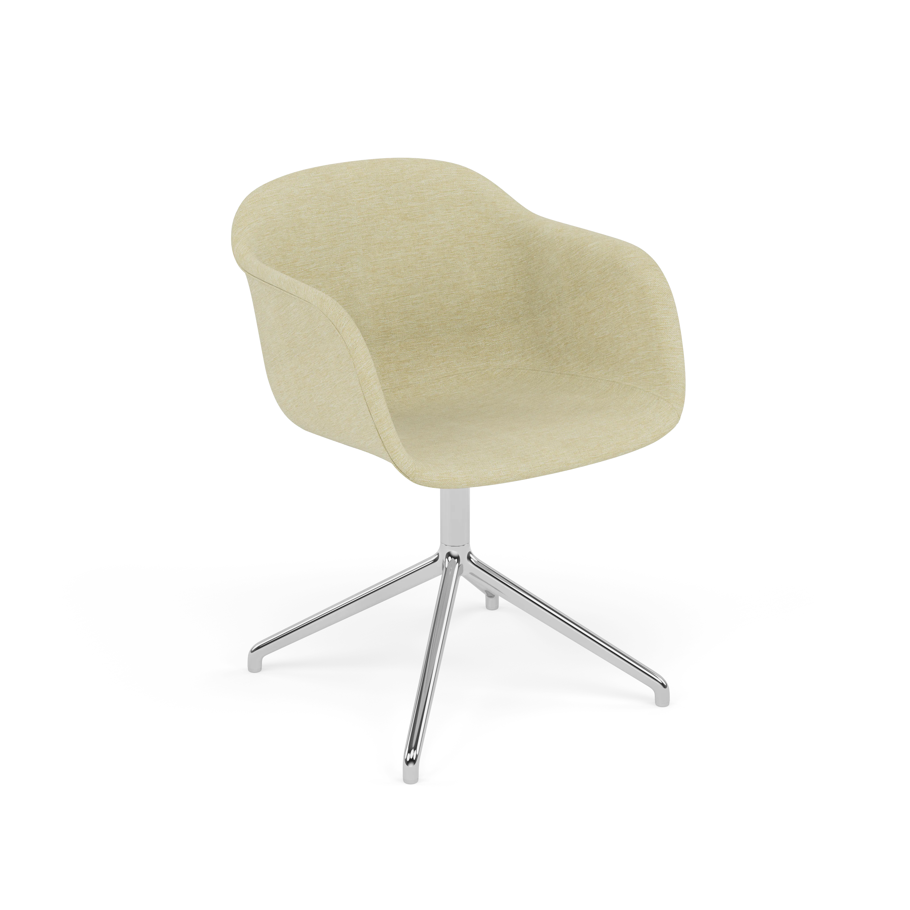
图：Fiber Armchair 旋转底座款（黏土色外壳、抛光铝底座），外壳由回收塑料与木纤维复合压制。图源：MUUTO 官网 Fiber 系列页。
02 品牌概述
Muuto 是丹麦哥本哈根的设计品牌，2006 年成立，用芬兰语单词 muutos（新视角）命名，做家具、灯具与家居配件。它的位置可以这样概括：把北欧设计的语言——浅色木材、克制的形体、可长期使用——当作起点而不是答案，然后用新材料、新工艺和更明确的色彩把"熟悉"往前推一步，让产品在住宅与项目市场里同时可用。
| 项目 | 内容 |
|---|---|
| 品牌名 | MUUTO（穆托）· https://muuto.com |
| 国家/地区 | 丹麦（总部与设计团队位于哥本哈根） |
| 成立时间 | 2006 年由 Kristian Byrge 与 Peter Bonnen 创立 |
| 创始人 | Kristian Byrge（此前参与创办哥本哈根餐厅 Noma）、Peter Bonnen |
| 代表性设计人物 | Anderssen & Voll、Iskos-Berlin、Thomas Bentzen、TAF Studio、Cecilie Manz、Lars Tornøe、Mika Tolvanen、Julien De Smedt、Benjamin Hubert（Layer）、Earnest Studio、Normal Studio、Form Us With Love、David Geckeler |
| 其他关键人物 | Line Brockmann Juhl（首席营销官，负责设计竞赛与品牌表述）；Susan Magsamen（约翰霍普金斯大学 International Arts + Mind Lab 执行主任，品牌神经美学研究的长期合作者） |
| 官方理念 | "new perspectives on Scandinavian design"（北欧设计的新视角）；产品须"既熟悉又新" |
| 品牌归属 | MillerKnoll（美国上市公司；旗下同时拥有 Knoll、HAY、Design Within Reach、Maharam 等品牌） |
| 核心业务 | 坐具、沙发与模块系统、桌几、收纳系统、灯具、家居配件、户外家具 |
| 经典产品 | Fiber Chair（2014）、Cover 系列、Nerd Chair（2012）、Stacked Storage System、The Dots、Outline 系列、Unfold 灯具、Strand（2019）、In Situ 模块沙发（2020）、Kink 花瓶（2020） |
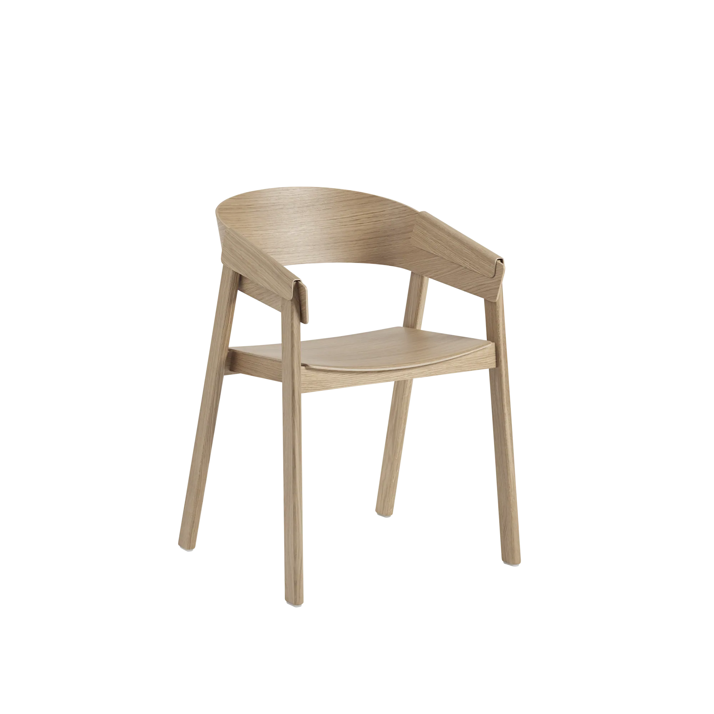
图：Cover Armchair 橡木款，靠背与扶手由整片木皮折过椅腿折包成型，表面看不到螺钉。图源：MUUTO 官网 Cover Armchair 产品页。
03 Brand 品牌：从一个芬兰语单词开始
2006：丹麦品牌，芬兰语命名
Muuto 成立于 2006 年，两位创始人 Kristian Byrge 与 Peter Bonnen 都不是家具制造出身。品牌名取自芬兰语的 muutos，意思是"新的视角"——官方对这段来历的表述是：他们要找的设计师必须能"用当代的方式重新解读传统"，而不只是复刻北欧经典。这决定了它从第一天起就不是一家工艺传承型公司，而是一家把北欧设计当作材料库来使用的公司。
2014–2018：两次资本转折
2014 年 8 月，丹麦投资机构 Maj Invest Equity 买入公司 45% 的股份，用于推动国际化；同年品牌的公开数据是产品经由 1,300 家经销商进入 52 个国家。2017 年 12 月，美国办公家具集团 Knoll 宣布以 3 亿美元收购 Muuto，交易自 2018 年 1 月起生效。这次易主把 Muuto 从一家北欧设计公司变成集团矩阵里的"生活方式品牌"——它的产品从此要同时向住宅零售与集团的项目渠道供货。
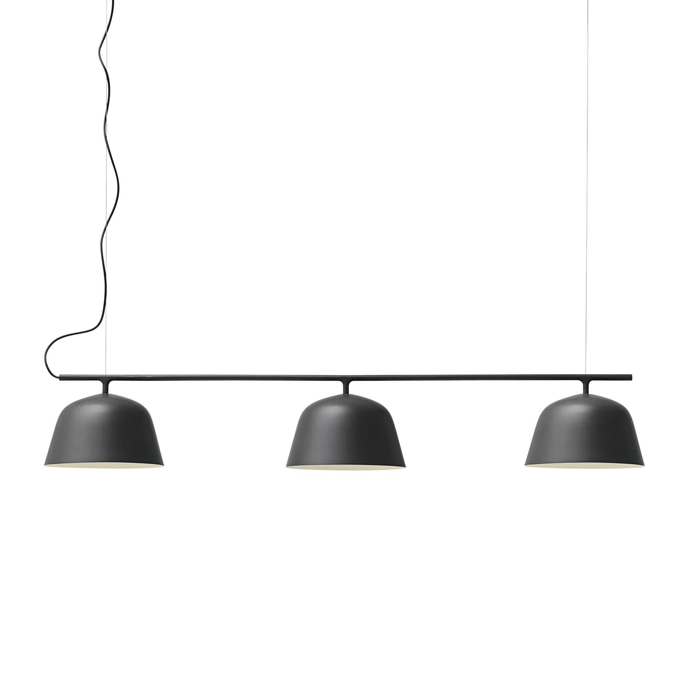
图：Ambit Rail Lamp（黑色款），灯罩由手工旋压铝制成，内侧白色涂层用于柔化出光。图源：MUUTO 官网 Ambit Rail Lamp 产品页。
2020 年代：材料叙事与项目渠道并行
被并入集团之后，Muuto 的产品线同时向两个方向扩张：一是对外部设计师的持续引入，二是把可持续指标做成可查的数字。2022 年它把最畅销的 Fiber Chair 换成回收塑料外壳，并公开了这款椅子单品的碳足迹变化；2024 年，品牌办了一场面向全球的设计竞赛，评委里出现了 Google 硬件设计副总裁 Ivy Ross 这样的非家具行业名字。在渠道端，它以"Muuto Space"的形式在欧洲、北美与亚洲铺开十几处展示空间，其中上海以预约制接待。
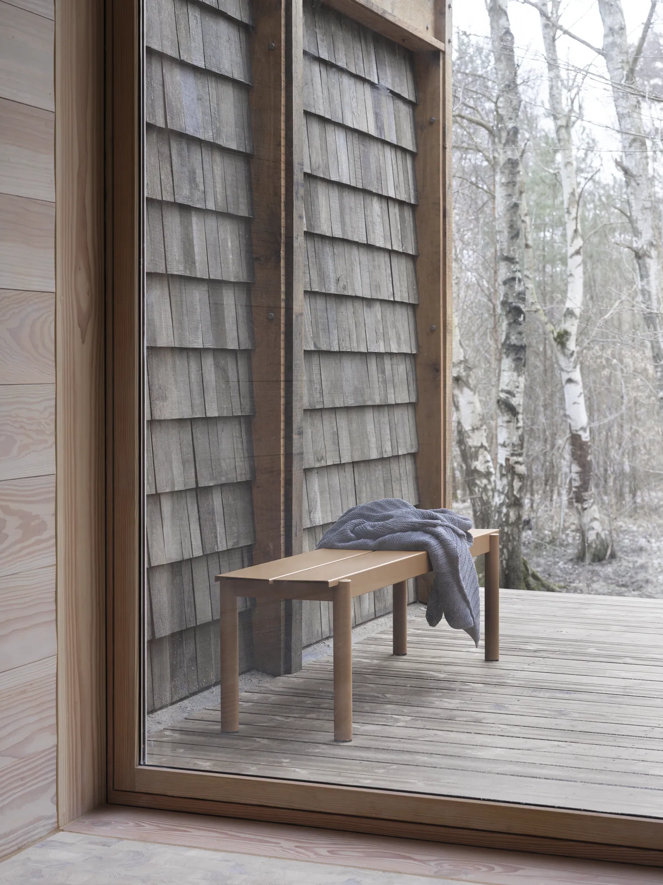
图：Linear Steel 长凳（橙锈色，170 cm），折边与半圆交叉腿构成座面结构，座板留缝便于排水。图源：MUUTO 官网 Linear Steel Bench 产品页。
20 年：把周年做成一次全球发行
2026 年是品牌成立二十周年。官方把这一年的动作集中在 3daysofdesign 期间：哥本哈根总部与 Other Circle 两处同时开放，用新发布、编号限量作品、空间装置与对谈把"下一章"作为主题。限量作品不做线上铺货，而是按城市分批落到巴黎、东京、首尔、台北等地的门店，每站数量、开售日期都公开——这是一次典型的品牌动作：不靠降价拉动零售，靠稀缺性与到场体验维持话题。
04 Category 品类与市场：价位带与口径
品类的定义与边界
Muuto 所在的品类通常被称为"北欧设计家具"（Scandinavian design furniture）：以丹麦、瑞典、芬兰、挪威的设计传统为共同语言，覆盖坐具、桌几、收纳、灯具与配件，价格卡在快销家具之上、经典设计名著之下。这个品类的边界由渠道划出来：它既要出现在设计家具零售店里，也要能进入办公、酒店与教育项目的采购清单。Muuto 的官方产品分区也印证了这一点——坐具、桌、收纳、灯具、配件、户外，每个大类下面都同时存在家用尺寸与项目规格。
价位带与产品分层
Muuto 的价格带可以用官方公开的零售价锚定：二十周年限量款中的铝型材椅子定价 995 欧元，手工吹制玻璃器物 795 欧元；常规产品里，木质单人椅、咖啡桌落在数百到两千欧元区间，模块沙发与整面收纳系统按配置计价。品牌的分层方式是"场景宽度"而不是价格档位：入门靠配件与灯具（挂钩、托盘、小灯），中段靠椅子与桌子，高价段靠模块沙发、系统收纳与项目定制。这种结构让它既有能被单件购买的入口产品，也有必须按项目报价的整间方案。
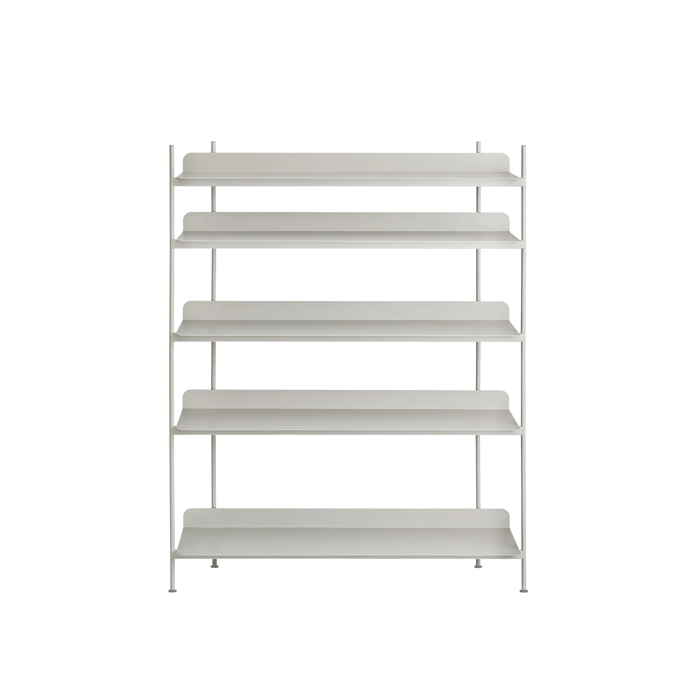
图：Compile 收纳系统的三种基础配置，立柱与层板可自由增减。图源：MUUTO 官网 Compile 系列页。
品类惯例：设计师合作与版税制
这个品类的通行做法是品牌不自建设计团队的全部产能，而是与独立设计师或工作室签长期合作，设计费以版税（royalty，按销售额抽成的设计报酬）结算。Muuto 明确采用了这套机制，设计师名单横跨丹麦、挪威、芬兰、英国、比利时、法国与美国。版税制决定了品牌的产品策略：它必须持续开发能长期销售的型号，而不是一次性主题款——一款椅子卖十年，设计师与品牌才同时受益。
术语注释：版税（royalty）——按产品销售额或产量向设计方支付的报酬，与一次性设计费相对。
材料与合规趋势
欧洲市场的准入门槛这几年从"设计"转向"合规+材料"。Muuto 公开的应对方式是把几件事做成可核查的数字：新设计用木必须以 FSC 认证为前提（品牌持有 FSC-C028824 认证）；纺织、室内家具、配件与灯具不再有意添加 PFAS；家具按北美 ANSI/BIFMA 标准做耐久测试（官方称 77% 的家具通过该测试，99.7% 满足欧标）。这些指标在采购端有实际作用——项目招标常把它们写成硬性条件。
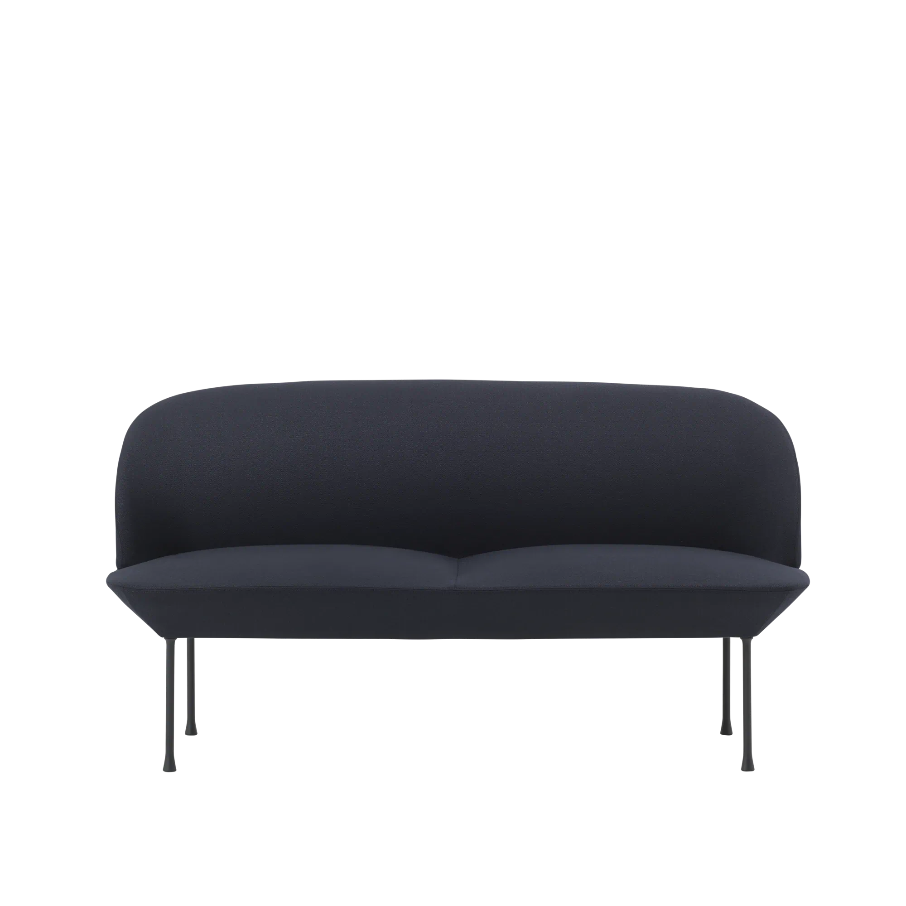
图：Oslo 双人沙发（Vidar 羊毛面料），是品牌把羊毛、皮革与回收面料放进同一套座体结构的例子。图源：MUUTO 官网 Oslo 系列页。
渠道结构
渠道分三层：自营的 Muuto Space 与旗舰店（哥本哈根、巴黎、东京、首尔、台北等，上海的 Muuto Space 采用预约制），覆盖欧洲、北美与亚洲的设计家具零售商，以及面向办公、酒店与教育项目的 contract 渠道。
术语注释：contract——面向酒店、办公、教育等项目的定制供货渠道，通常按项目报价并提供规格文件。
05 User 用户与场景：谁在决定一件北欧家具
决策链：设计师、业主、经销商与项目采购
一件北欧设计家具很少由使用者单独决定。典型的链条是：室内设计师或建筑师在方案阶段挑定系列与配色；业主确认预算与风格；设计家具零售商负责配置、报价与交期；如果是办公或酒店项目，采购方还会把合同条款、交货批次与验收标准一起写进订单。Muuto 的产品结构对这种链条做了三点回应——模块化（同一系列提供多种尺寸与配置组合）、规格化（绝大多数产品提供 2D/3D 与 Revit 文件、测试证书、装柜与包装数据）、以及面向项目方的专门渠道。对设计师来说，真正省时间的不是好看的图，而是能直接进图纸的模型与参数；这正是它把技术资料开放到产品页上的原因。
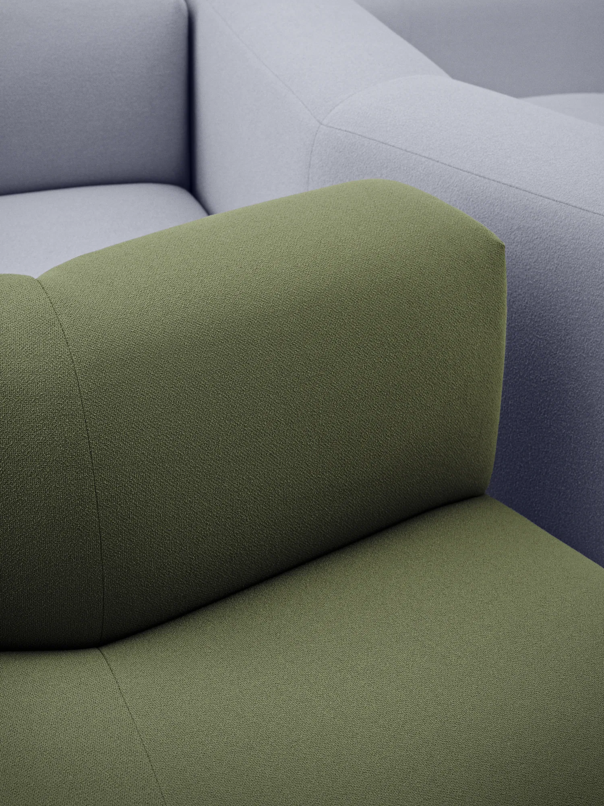
图：Connect 模块沙发，14 种模块可按空间与使用方式重新组合，底部小脚让座体离地。图源：MUUTO 官网 Connect 模块沙发产品页。
用户分层与核心任务
三层使用者最清楚：一是愿意为设计付费的城市住宅用户，任务是把家做成"看起来对"的样子并且用得久；二是设计从业者与小型工作室，任务是为客户的方案找到能落地、有品牌背书的产品；三是项目采购方（办公、酒店、教育），任务是以可验收的标准一次配齐大量家具。三者的共同点是"不想返工"——颜色要能对上、配件要能补、损坏的部件要能换。品牌给出的回应是把备件做成体系：官方公开提供 1,600 件以上备件，用于延长产品寿命。
术语注释：JTBD（Jobs To Be Done）——用户"雇佣"一件产品去完成的具体任务，而非人口统计标签。
场景与项目案例
从官方场景图与产品规格可以看出它的三个高频场景：开放的客厅与餐区（沙发、咖啡桌、吊灯组合），餐厅与咖啡馆（可堆叠、易清洁的椅子与长凳），以及办公与公共空间（工位系统、会议桌与模块沙发）。其中堆叠椅与户外长凳都按高强度使用来设计——Cover Side Chair 可堆叠，Linear Steel 长凳留有排水缝，座体比例被设计成能塞进配套长桌下方。这不是把家用的产品稍作加固，而是把项目场景的物理条件当作设计输入。
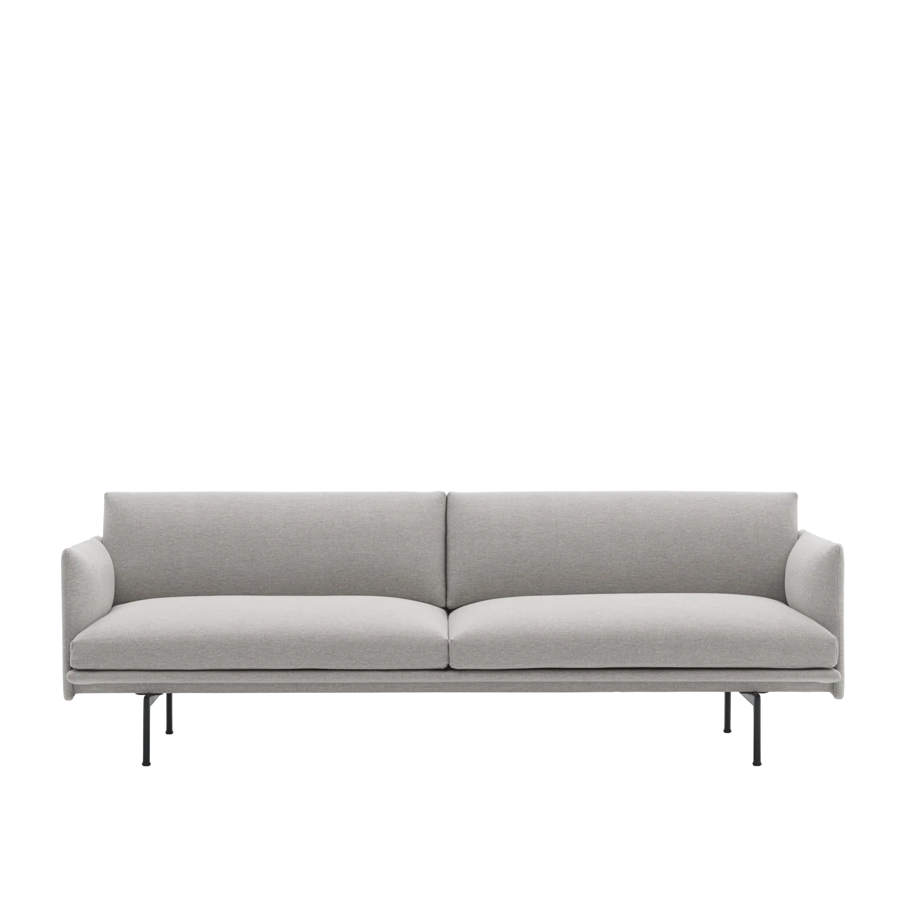
图：Outline 三人沙发（黏土色布面、黑色铝脚），外部线条干净、内部座深与软垫加厚。图源：MUUTO 官网 Outline Sofa 产品页。
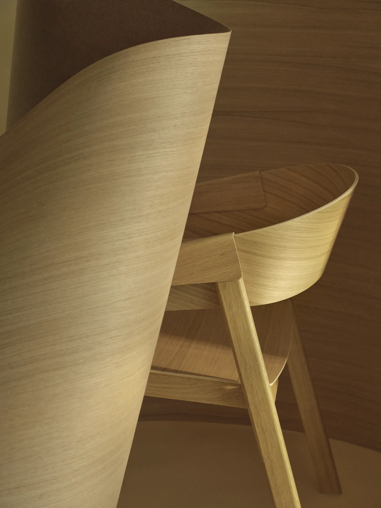
图：Cover 系列概念图，可见木皮沿椅腿折包、包裹靠背的结构关系。图源：MUUTO 官网 Cover Armchair 产品页。
购买与使用入口
用户在三种情境下进入这个品牌：搬新家或改造某个房间时被某件家具的样子吸引；在餐厅、酒店或办公室里先用到、之后去查品牌；以及做方案时在图纸库、材料样本或经销商展厅里遇到它。第三种入口最能解释 Muuto 为什么把"可下载的规格文件"放在产品页的显眼位置——它把一次性购买行为转换成设计流程中的默认选项。使用阶段的入口则更隐蔽：备件、清洁与保养说明、面料与皮革的来源说明，都写在同一页上。
术语注释：CEP（Customer Entry Point）——触发用户进入某个品类的具体情境与入口。
06 Positioning 定位：熟悉但不同
参照系与目标人群
Muuto 的参照系不是"高端家具"这个大池子，而是北欧设计传统本身。官方写法是"rooted in the Scandinavian design tradition"，并明确列出四项：经久的美感、功能性、工艺与诚实的表达。它要争取的人也很具体：认可北欧设计但觉得经典款过于稳妥的设计消费者，以及在方案里需要一点辨识度但不想冒险的设计师。二者共同的要求是"不会出错，但也不普通"。
差异点与基准点
差异点有四条，都能落到具体产品上。第一是材料替代的决心：Fiber Chair 的外壳由 100% 回收塑料与木纤维复合而成，其中塑料部分 80% 来自眼镜制造产生的工业废料，而不是市面上更常见的饮料瓶回收料；官方称这一改动让该款椅子的碳足迹降低约 30%。
第二是工艺路线的"反直觉"：Strand 吊灯的灯罩不是成型塑料壳，而是把纤维状聚合物喷附在轻钢骨架上，硬化后由材料本身充当扩散罩——用更少的材料做出更大的体量。
第三是把小件做成系统：The Dots 挂钩有木质、金属与陶瓷三种材质、多个尺寸，可以按任意排布组合成墙面图案，官方把它称为"功能性的雕塑"。
第四是模块化被"藏起来"：In Situ 模块沙发的各单元由粉末喷涂钢制框架连接，设计与结构都在削弱模块之间的接缝感。
基准点同样清楚：FSC 认证木材、无 PFAS 的纺织与表面处理、符合欧标与北美耐久测试、可更换备件、原厂面料与皮革来源可查。缺任何一项，都进不了欧洲设计师的常规备选清单。
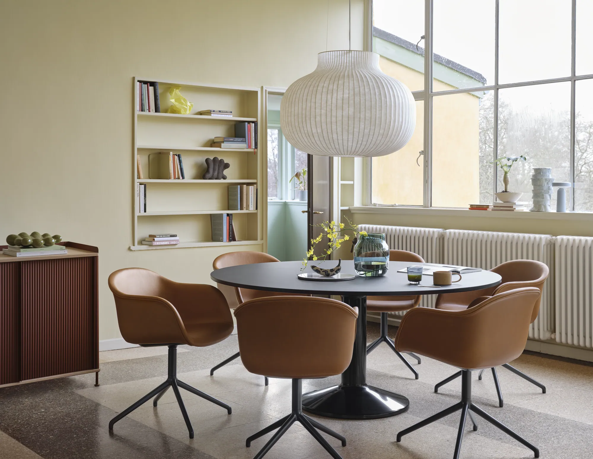
图：Fiber 系列椅子（皮革坐垫与金属底座）在餐区中的使用场景，外壳为回收塑料与木纤维复合材料。图源：MUUTO 官网 Fiber 系列页。
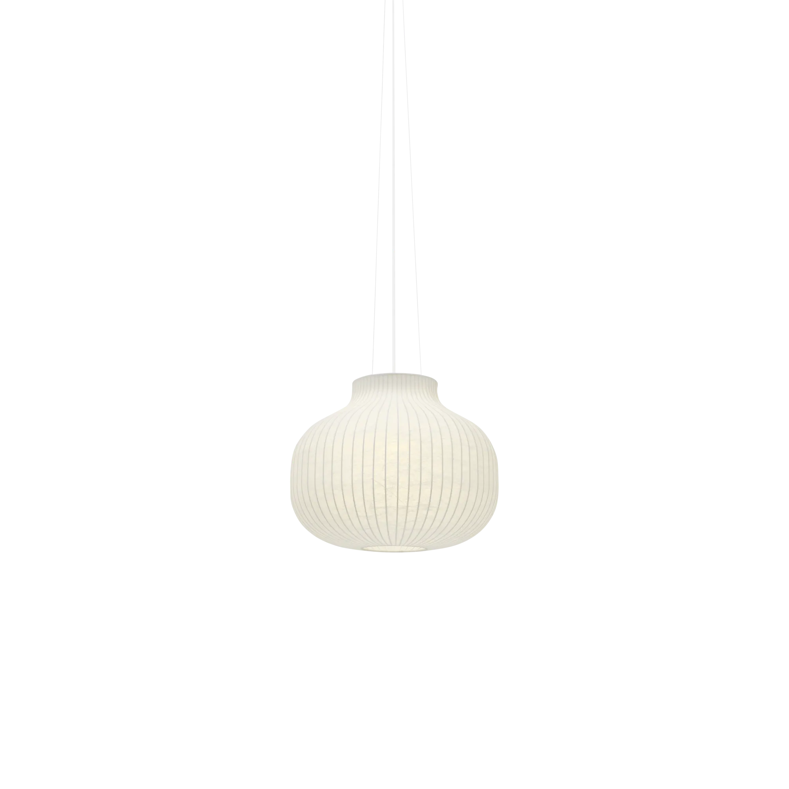
图：Strand 吊灯（45 cm 款），纤维材料喷附在轻钢骨架上硬化成罩，光线经材料本体扩散。图源：MUUTO 官网 Strand 吊灯产品页。
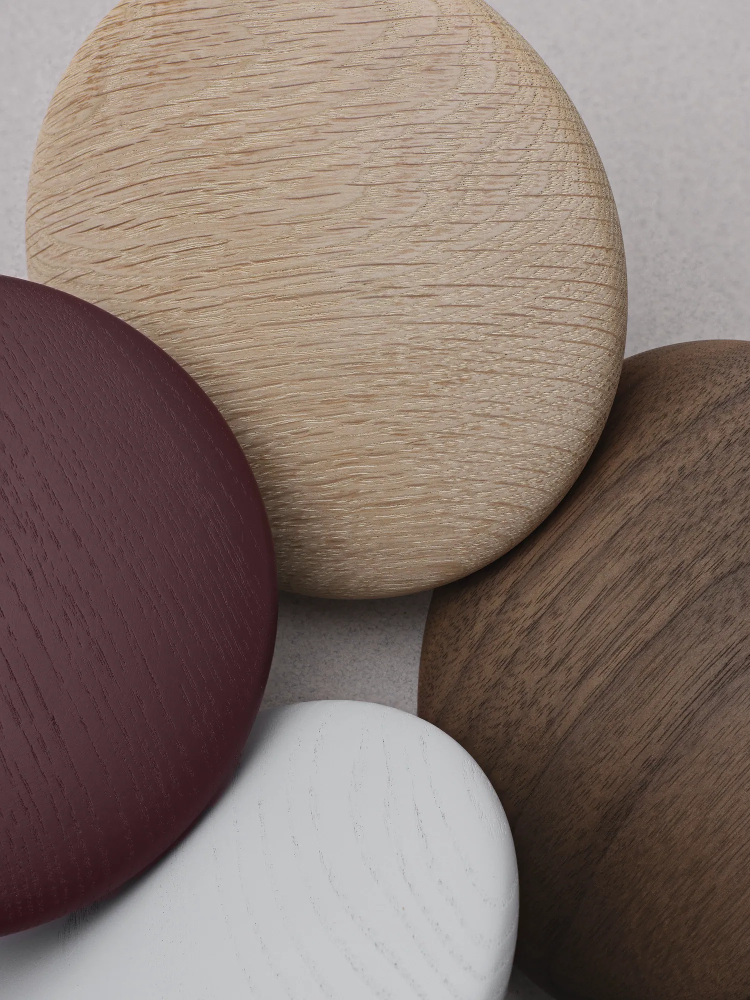
图：The Dots 木质挂钩的概念组合，三种尺寸与多色可按任意排布上墙。图源：MUUTO 官网 The Dots 产品页。
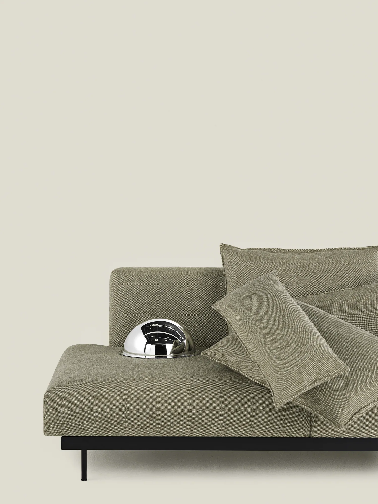
图：In Situ 模块沙发概念图，模块之间由钢制框架连接，接缝被刻意弱化。图源：MUUTO 官网 In Situ 模块沙发产品页。
术语注释：POD（Points of Difference）——差异点，品牌相对竞品被感知到的独特优势。
术语注释：POP（Points of Parity）——基准点，该品类中必须达到的行业共识项。
定位陈述与证据链
把以上压缩成一句话：Muuto 是"以新材料与工艺重写北欧设计语言的家具品牌"，服务那些既要稳妥的耐用性、又要一点新鲜感的设计消费者与设计师。承诺与证据的对应关系是：材料承诺对应回收塑料外壳与 FSC 木材；工艺承诺对应木皮折包、手工旋压铝、玻璃手工吹制；耐用承诺对应 BIFMA 测试与 1,600 件以上备件；感官承诺对应与约翰霍普金斯大学合作的神经美学研究——这一点在第八章展开。
07 Product 产品：一把椅子引出的产品线
产品组合与命名逻辑
Muuto 的产品线按场景与物件类型划分：坐具（椅、凳、吧椅、长凳、休闲椅）、沙发（含模块系统）、桌（餐桌、咖啡桌、边几、办公桌）、收纳（模块收纳、书架、边柜、玄关、办公收纳）、灯具（吊灯、落地灯、台灯、壁灯）、配件（挂钩、托盘、花瓶、镜子、地毯、靠垫）与户外家具。命名方式有两类：一类是直接描述物件（Cover、Outline、Linear、Compile、Stacked），一类是意象命名（The Dots、Ambit、Strand、Unfold、Under The Bell、Nerd）。同系列靠尺寸与底座变体区分（如 Fiber 的各种底座、Outline 的二/三人位与 Studio 紧凑版），而不是靠数字后缀堆型号——这既降低了检索成本，也让零售端更容易按空间报价。
Fiber Chair（2014）：把最畅销的椅子换掉塑料
Fiber Chair 由挪威工作室 Iskos-Berlin 设计，2014 年发布，出发点是对"壳体椅"这一经典原型的当代重写：壳体用塑料与木纤维复合，表面呈现哑光手感，形体上则把扶手与靠背连成一条包裹的曲线。2022 年，Muuto 用回收塑料替换了这款椅子的原生塑料，并保留原有配色与底座选项。品牌对外解释这次改动的口径是：作为最畅销的单品之一，材料替换才有实际影响——"从原生塑料跨到回收塑料，是我们走向循环消费的一个雄心起点。"设计师也给出了他们对这类产品的标准："设计中最难也最高贵的功课，是做简单、好用、几乎平常，却仍有强烈识别度的物件。"
外壳的塑料里有 80% 来自眼镜制造过程中产生的工业废料，木纤维为 FSC 认证材；材料混合比例需要重新标定，才能在保持原有哑光质感的同时满足强度要求——回收料来源单一、成分稳定，是这次替换能成立的前提。配色与底座保持与原版一致（橡木、金属、旋转底座等），品牌称这样做的目的是降低用户的重新决策成本。
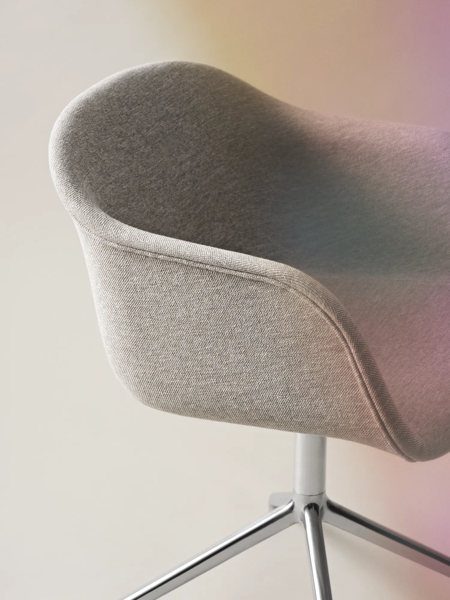
图：Fiber Armchair（旋转底座）的哑光复合外壳，形体上扶手与靠背连成一条包裹曲线。图源：MUUTO 官网 Fiber 系列页。
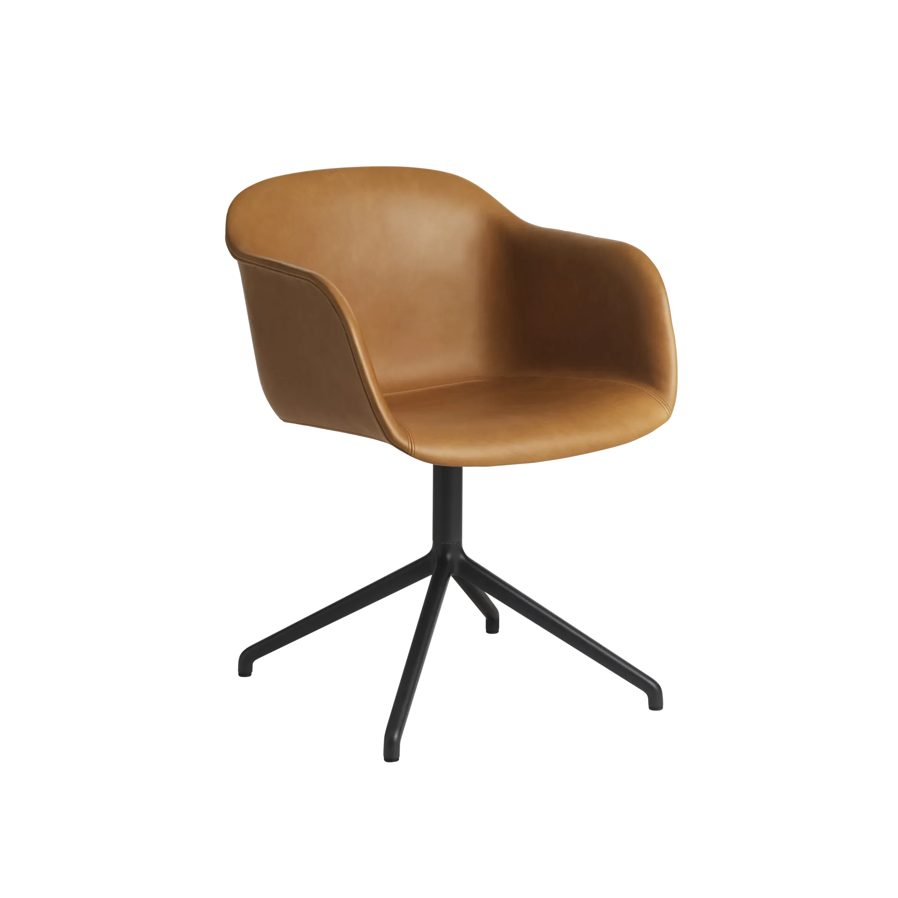
图：Fiber 椅与收纳、灯具同框的客厅场景，可见品牌在同一空间里用木色与暖灰统一质感。图源：MUUTO 官网 Fiber 系列页。
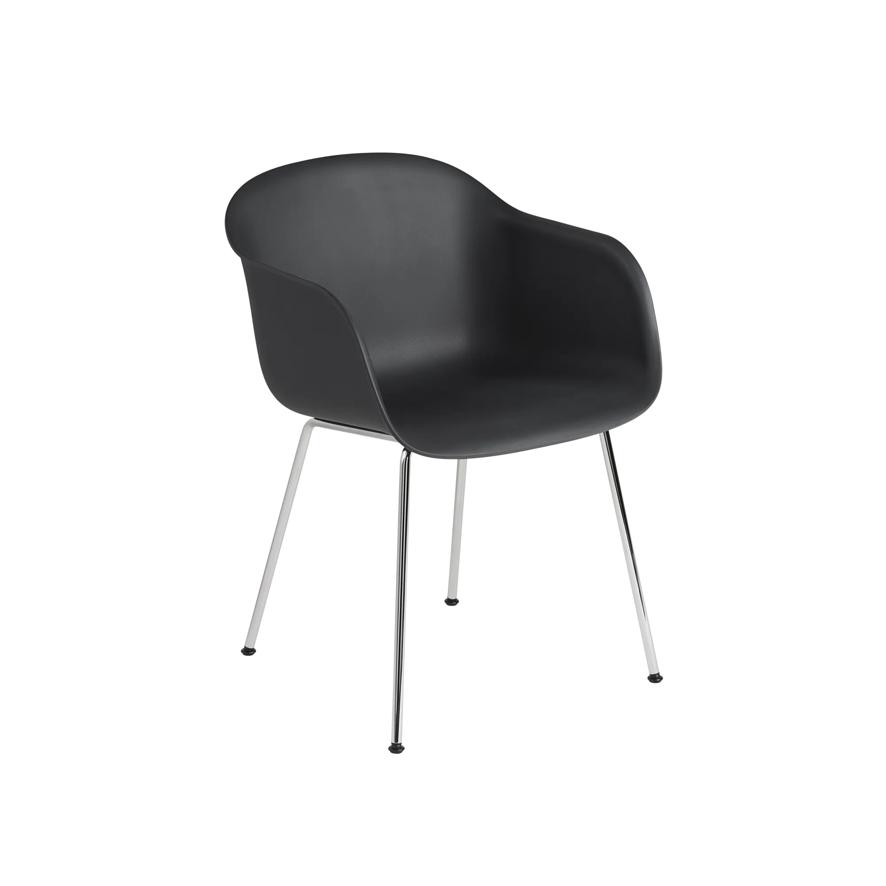
图：Fiber 椅管式底座款，同一壳体可与木腿、金属管脚与旋转底座组合。图源：MUUTO 官网可持续发展页。
Strand（2019）：把钢结构裹进纤维
Strand 是英国工作室 Layer（创始人 Benjamin Hubert）为 Muuto 做的第一件产品，2019 年在伦敦设计节发布，也是品牌第一次与英国设计师合作。它的工艺逻辑来自蚕茧：先用轻钢做成骨架，再把纤维状聚合物喷涂在骨架上，硬化后由这层材料本身充当灯罩与扩散器。四个尺寸的吊灯都追求"体量大、用料少"——外层纤维极薄但强度足够，从而在减少材料的同时得到柔和的出光。
设计师对这次合作的表述是："我们想做的是能改善使用者情绪健康、并至少反映其生活方式的设计。"对品牌侧，Hubert 的说法也很直接："Muuto 与我们'做多数人买得起、能自然融入家的简单设计'的目标是一致的。"这盏灯之后成为品牌在照明线里的辨识度来源：它的形体不依赖贵金属与复杂结构，靠材料工艺本身建立形象。
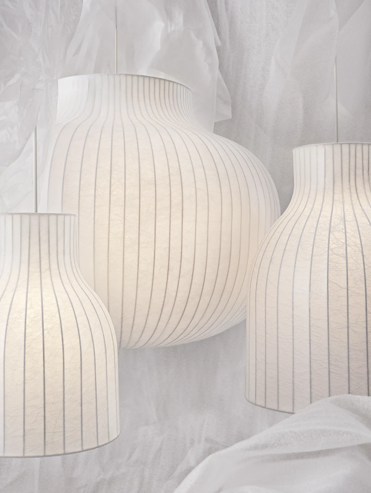
图：Strand 吊灯概念图，可看到纤维材料在钢骨架上的覆层与厚度差异。图源：MUUTO 官网 Strand 吊灯产品页。
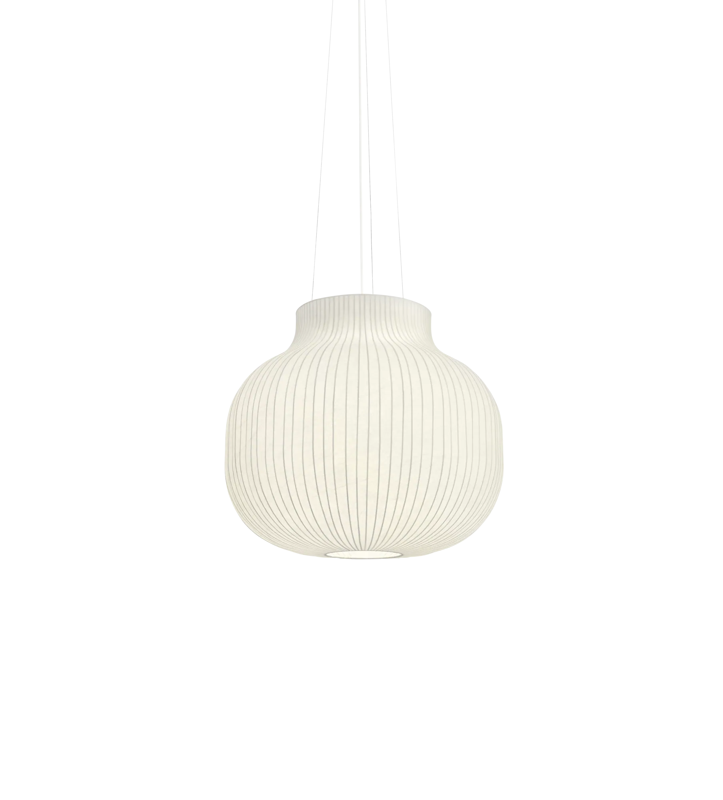
图：Strand 吊灯 60 cm 款，同一工艺在大尺寸下的体量感。图源：MUUTO 官网 Strand 吊灯产品页。
Post 落地灯与 Kink 花瓶（2020）：磁吸与数字塑形
这两件产品都出自 Earnest Studio（设计师 Rachel Griffin），是工作室为品牌做的首组作品。Post 落地灯把"灯头位置"变成可变参数：一根中心立柱、若干圆形灯体，灯体通过磁吸接头固定在立柱任意高度，各自可调角度、独立调光，电力经中心集线器分配，线缆用磁性卡扣贴在立柱上——同一套逻辑还派生出一面壁装版本。花瓶 Kink 的出发点相反，是把简单形体做数字化的变形：把两个筒形在数字模型里"折"在一起形成双开口，再用陶瓷烧成并上缎面釉，官方称它在不装花时也是一件雕塑。
设计师对 Post 的解释是"从磁吸接点的可能性出发，把灯体位置与亮度的决定权交给使用者"；对 Kink 则是"探索如何通过简单形体的数字操作生成新形态"。两件产品放在一起，可以看出品牌对"新视角"的具体定义：不是发明新功能，而是把已有功能里的一个参数交还给使用者。
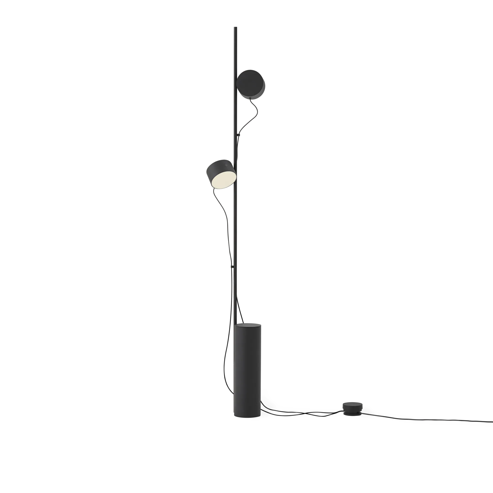
图：Post 落地灯（黑色），圆形灯体通过磁吸接点固定在立柱任意高度，各自独立调光。图源：MUUTO 官网 Post 落地灯产品页。
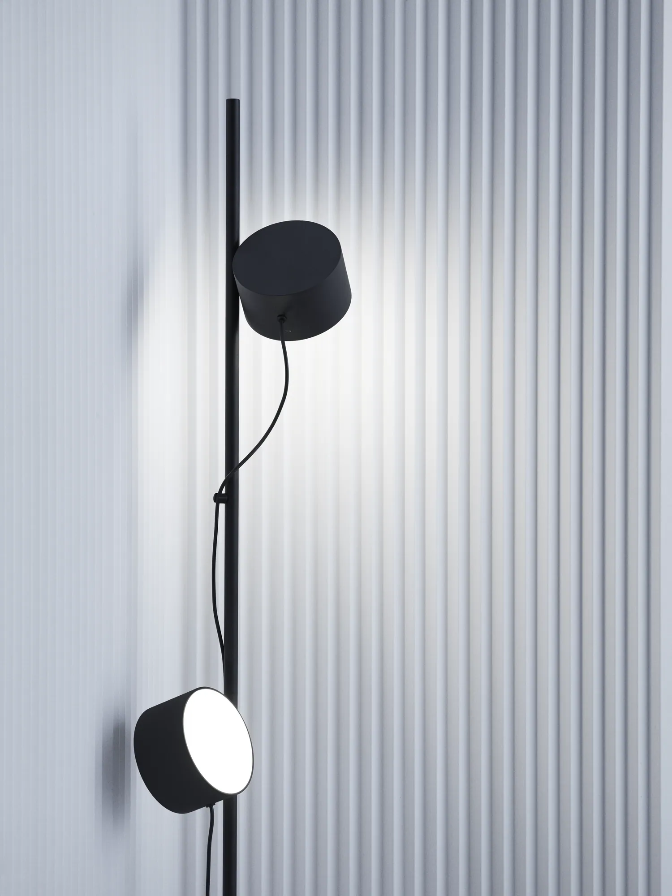
图：Post 灯的概念图，可见中心立柱、集线器与灯体的连接关系。图源：MUUTO 官网 Post 落地灯产品页。
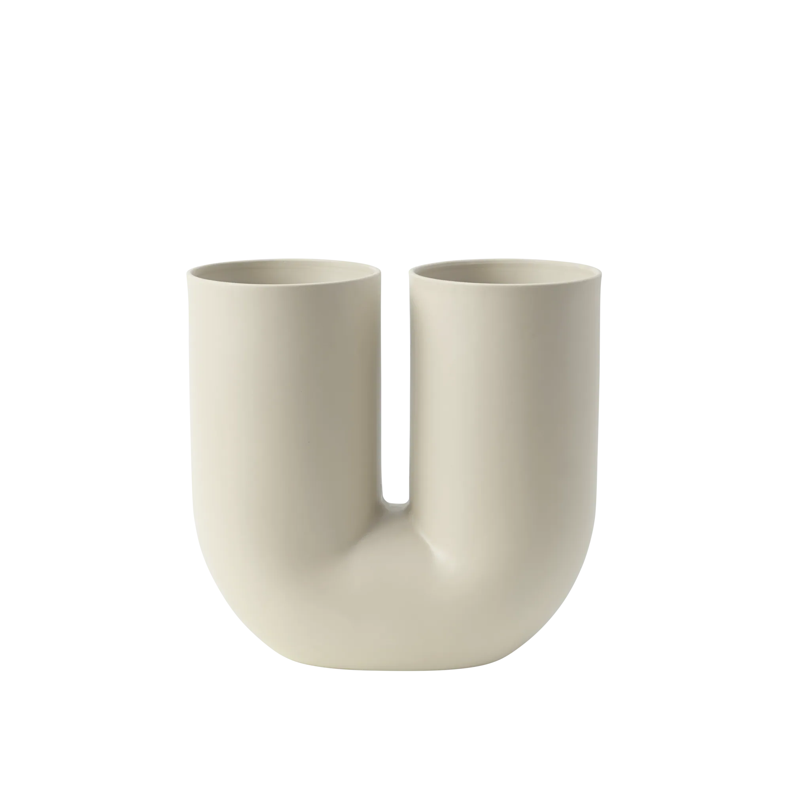
图：Kink 花瓶（沙色），两个筒形在数字模型里折叠相并形成双开口，表面为缎面釉。图源：MUUTO 官网 Kink 花瓶产品页。
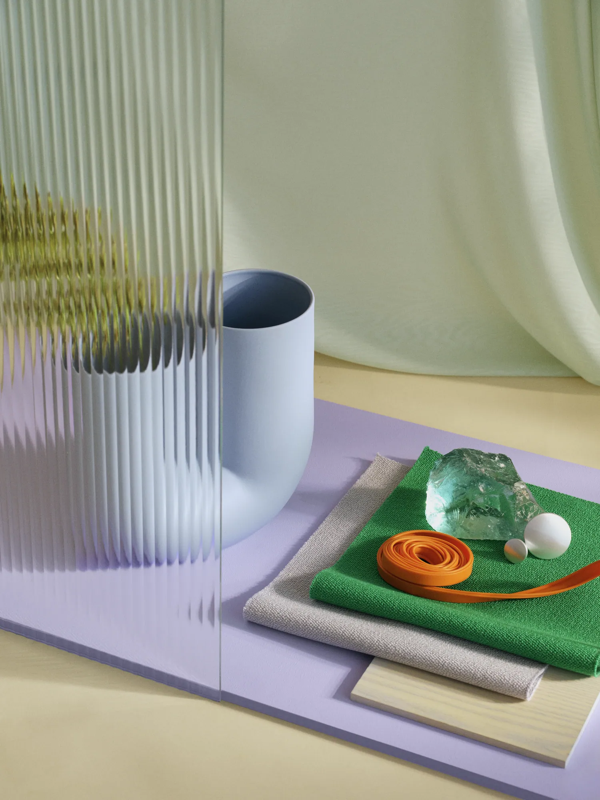
图：Kink 花瓶浅蓝色款，可见两个筒形相交处的折面与开口关系。图源：MUUTO 官网 Kink 花瓶产品页。
In Situ 模块沙发（2020）：藏起来的模块缝
In Situ 由 Anderssen & Voll 设计，2020 年发布，思路是把模块化的功能与"看起来不像模块"的外观放在一起：各单元用粉末喷涂钢制框架连接，一条连续的裙边沿座面与靠背绕行，把模块之间的视觉接缝遮住，使整组沙发在视觉上像一个整体。设计师的表述是："我们想做出既能自由组合、又保留简洁优雅线条与深坐感的沙发。"
它的商业意义在于把品牌的沙发线从固定尺寸推向按空间配置——模块可以按房间形状、使用人数与朝向重新排布，颜色与面料则参考品牌的常规面料体系。对项目市场来说，这比单件沙发更容易进入方案；对住宅用户来说，它把"以后可能搬家"的问题变成了可调整的配置。
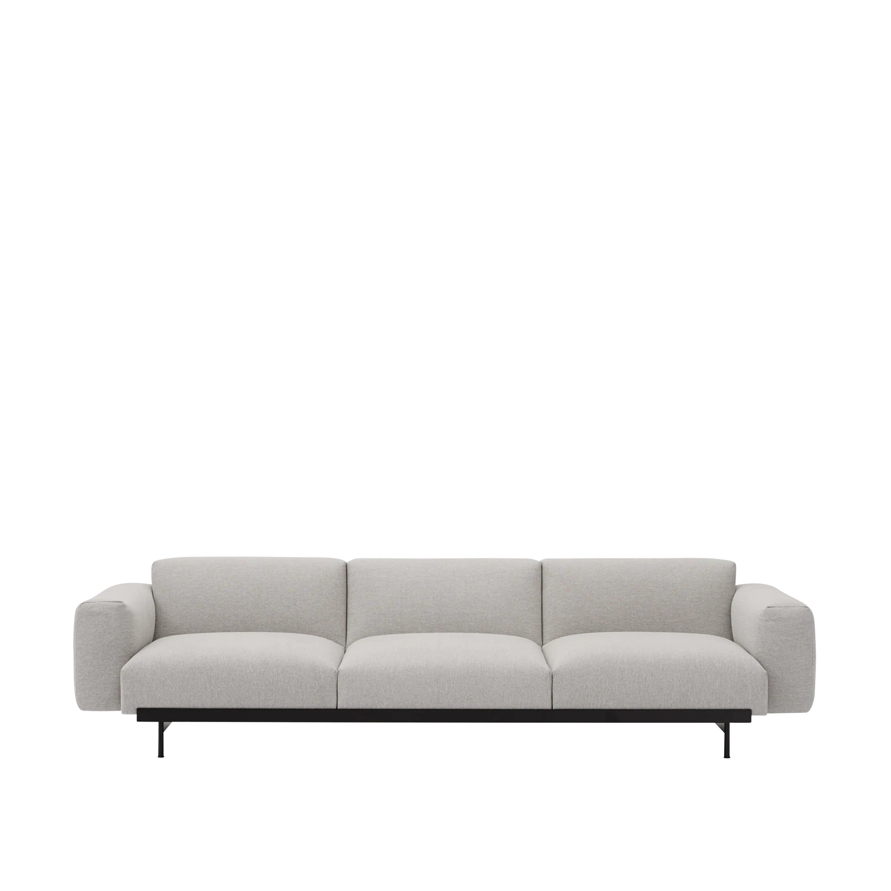
图：In Situ 三人位配置（黏土色面料），连续裙边遮住模块接缝。图源：MUUTO 官网 In Situ 模块沙发产品页。
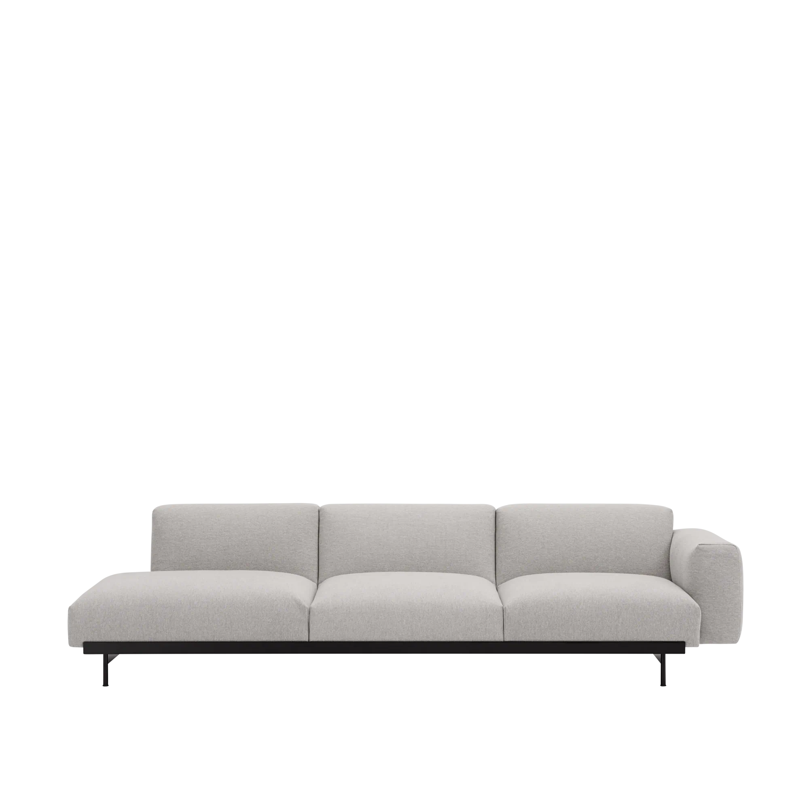
图：In Situ 第二组三人位配置，可看出同一套模块在长度与座深上的变化。图源：MUUTO 官网 In Situ 模块沙发产品页。
Nerd Chair（2012）：一场学生竞赛变成产品
Nerd Chair 的出身是品牌的青年设计机制。Muuto 自 2010 年起举办面向北欧学生的设计奖项，2012 年的首奖颁给了当时就读于丹麦皇家美术学院的 David Geckeler，作品就是 Nerd Chair——靠背与座面一体成型，边缘圆润，形体带有一种不严肃的当代感。它随后进入量产序列，并在之后扩展出吧椅与中岛椅，成为品牌最早一批"竞赛—量产"路径的产品。
这条路径后来被品牌制度化：2024 年它把奖项升级为面向全球的 Muuto Design Contest，征集小件家具与配件，外部评审包括 Google 硬件设计副总裁 Ivy Ross、哥本哈根饰面品牌 File Under Pop 创始人 Josephine Akvama Hoffmeyer，以及设计师 Jamie Wolfond。首席营销官 Line Brockmann Juhl 对外的说法是："寻找新视角是 Muuto 的一部分基因，我们想挑战自己，也想和全世界的创作者合作。"
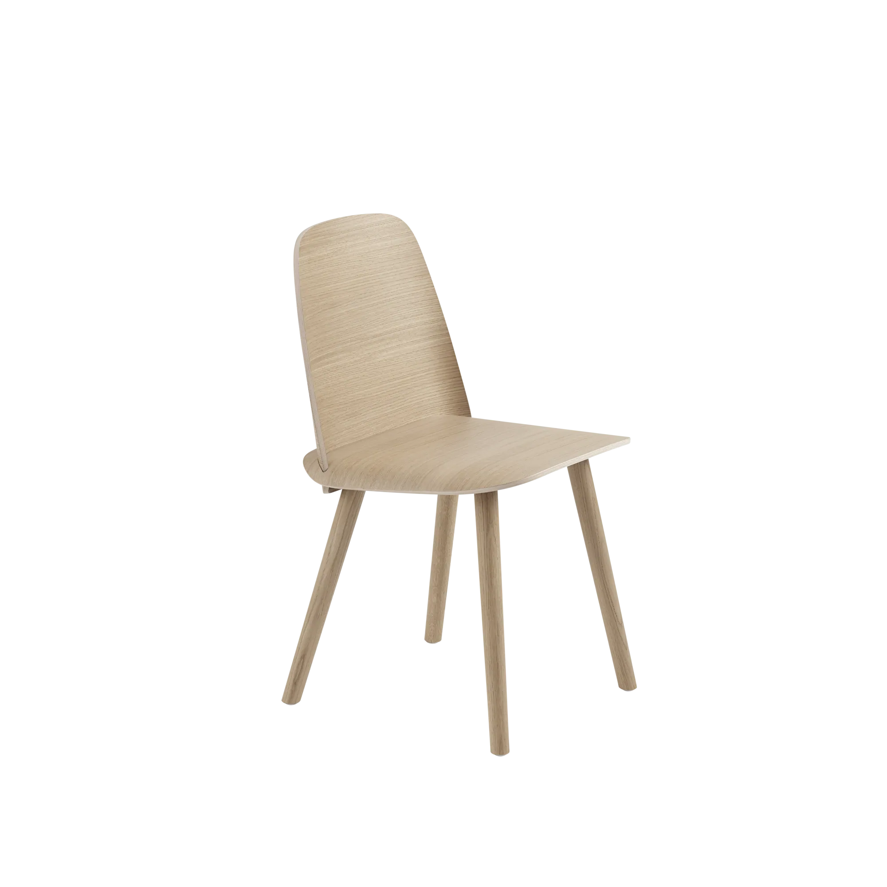
图：Nerd Chair 橡木款，靠背与座面一体成型、边缘圆润。图源：MUUTO 官网 Nerd Chair 产品页。
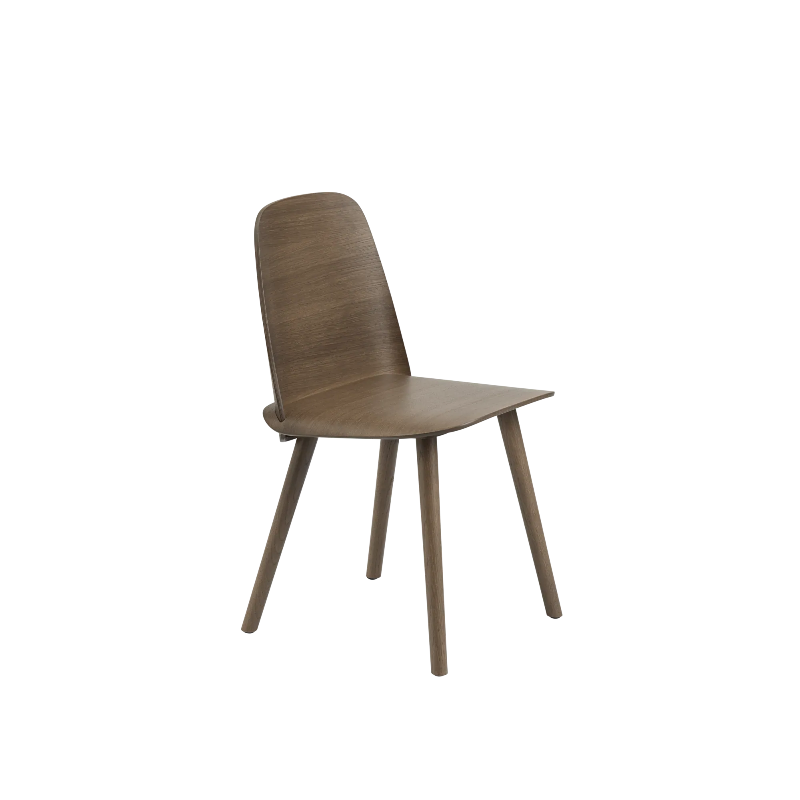
图：Nerd Chair 深棕染色款，同一形体下的木材染色与表面处理变化。图源：MUUTO 官网 Nerd Chair 产品页。
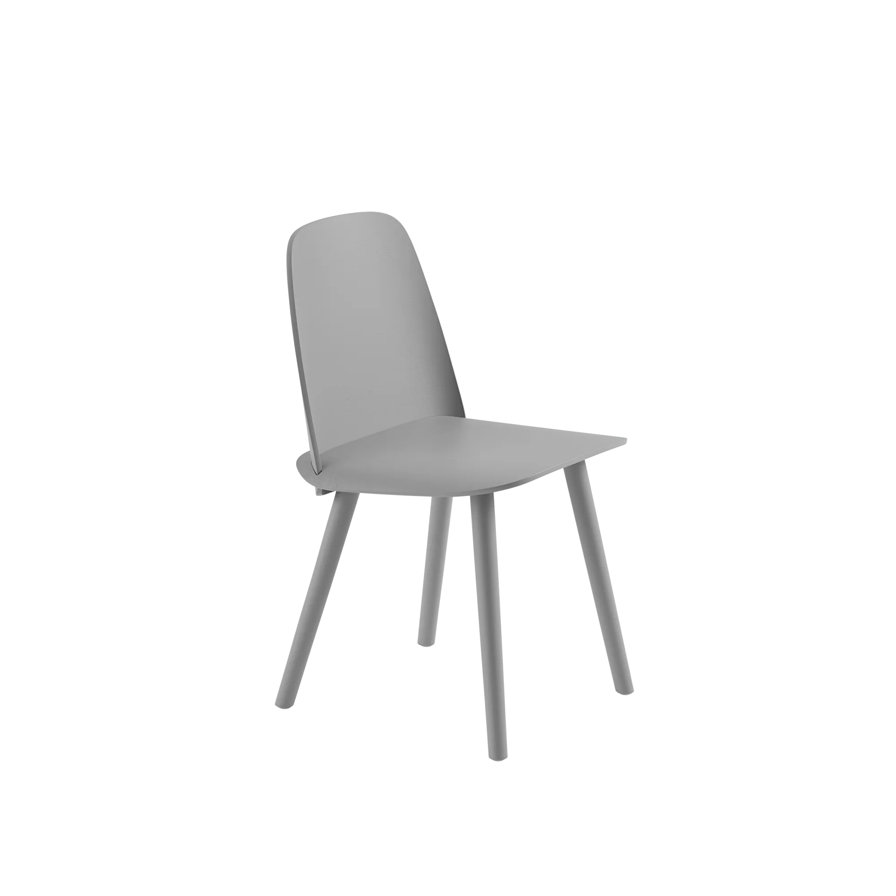
图：Nerd Chair 灰色款，说明这条线从单色扩展到多色体系。图源：MUUTO 官网 Nerd Chair 产品页。
第三方评价与产品小结
产品的外部评价集中在两点：一是"不冒险但有辨识度"的设计判断，二是材料与合规的扎实程度。设计媒体对 Fiber Chair 的复材外壳、Strand 的纤维喷涂工艺、Cover 的木皮折包都做过专门报道；品牌自身则把耐久测试（BIFMA）、低挥发（VOC）、无 PFAS 与可回收比例写进公开指标。评价的分歧也存在：追求原木手感与手工感的用户会觉得复合材料外壳"离木作远了一些"，而环保指标更看重可回收的比例与来源。两条评价都成立，但指向的是不同的价值排序。
08 Aesthetics 美学：光、曲线与克制
视觉识别与传播语言
Muuto 的品牌识别几乎不做图形符号：一个无衬线的字标，加上极度克制的版式，把注意力全部让给产品摄影。官方的产品图以浅灰或暖白背景为主，光位统一，尽量让材质本身成为主角；场景图则偏自然光与室内真实环境。这种"把图像当作品集"的做法，直接影响它在设计媒体中的可传播性——图片不需要解释就能被引用。二十周年时，品牌又把传播重心放到线下：展览、对谈与限量发行，媒体内容由现场产生。
形态与比例：圆与折线
Muuto 的形体语言可以分成两支：一支是圆与包裹（Fiber 的扶手曲线、Under The Bell 的钟形、Wrap 的围合），另一支是折与直（Cover 的木皮折包、Linear 的折边、Stacked 的直角体块）。两支并不冲突，因为比例被统一在"轻"上：座体离地、立柱细、边缘薄。它的视觉秩序不靠装饰，而靠几个反复出现的处理——边缘倒角、无可见螺钉、把结构关系简化成一条线。
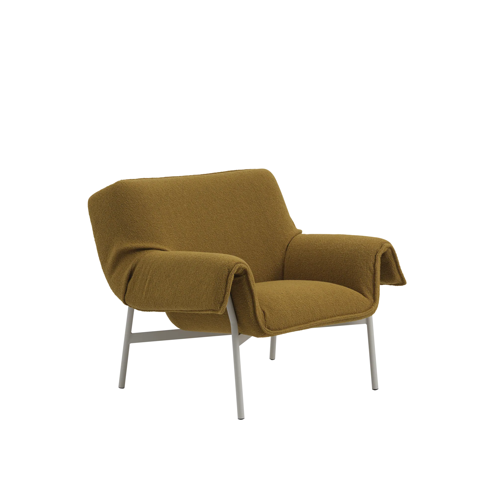
图：Wrap 休闲椅（灰调），围合形体把使用者包在座体内，对应五原则里的"形体"与"触感"。图源：MUUTO 官网 Wrap 休闲椅产品页。
色彩与材料情绪
颜色被当成材料问题处理：木材分橡木、白蜡、深棕染色；金属分抛光铝、哑光喷涂；织物与皮革按一套固定面料体系提供，色号彼此能相互搭配。品牌的说法是"邀请人、直觉上有吸引力、又不压制环境"，落到操作层就是低饱和为主、每季引入少量高饱和（橙、深红、浅蓝）作为变化点。这种配色策略让不同系列放在同一空间里不容易打架，也让零售端的搭配推荐变得简单。
光与空间
光是 Muuto 少数明确写成方法论的领域。品牌把"光作为工具"列为神经美学五原则之一，理由来自生理节律：偏冷的色温让人更清醒，偏暖的光让人放松。落到产品上，Ambit 系列的白色内壁、Under The Bell 的钟形反射、Post 的可调角度与调光，都是同一逻辑的不同表达——灯具的作用不只是照明，而是改变一个空间在一天中的状态。
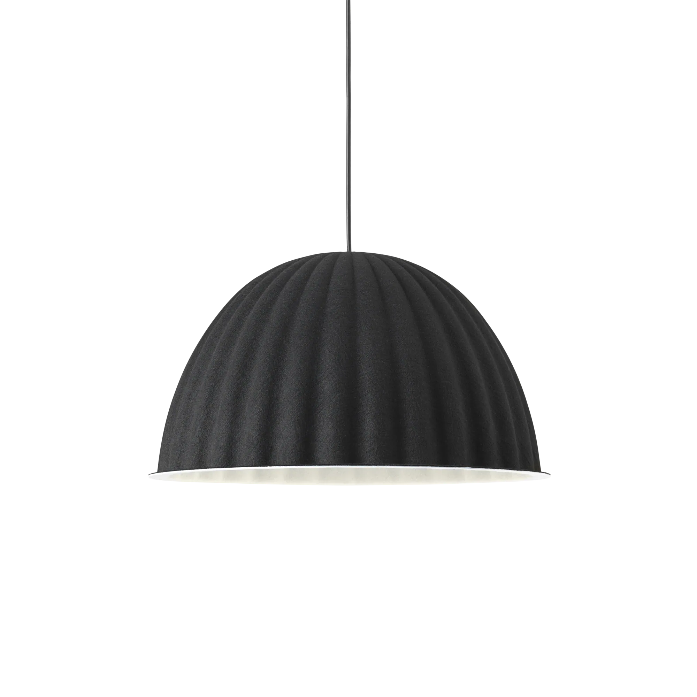
图：Under The Bell 吊灯（55 cm，黑色），钟形内壁把光反回桌面，同时吸收环境声。图源：MUUTO 官网 Under The Bell 吊灯产品页。
感官与情感基调
品牌把感受力写成了可执行的研究：它与约翰霍普金斯大学 International Arts + Mind Lab 执行主任 Susan Magsamen 长期合作，把神经美学（neuroaesthetics，研究审美体验如何影响大脑与身体的学科）归纳为五条设计原则——自然、光、形体、色彩、触感，其中形体一条直接引用研究结论："人天然偏好平滑曲线。"Magsamen 对审美体验的描述是："当你获得高度审美体验时，它会改变你——改变你的生理、情绪与感受。"
术语注释：神经美学（neuroaesthetics）——研究审美体验如何影响大脑、身体与情绪的学科。
这套表述的价值在于它把"舒服"这种模糊感受拆成了可以检查的项目：把自然引入室内、控制色温、用圆角、让颜色不冲突、让手感可被触摸。对设计师而言，这比"北欧风格"这种整体印象更有用；对品牌来说，它也是一条把住宅、办公与酒店场景统一起来的主张——三种空间要的其实是同一种感受。
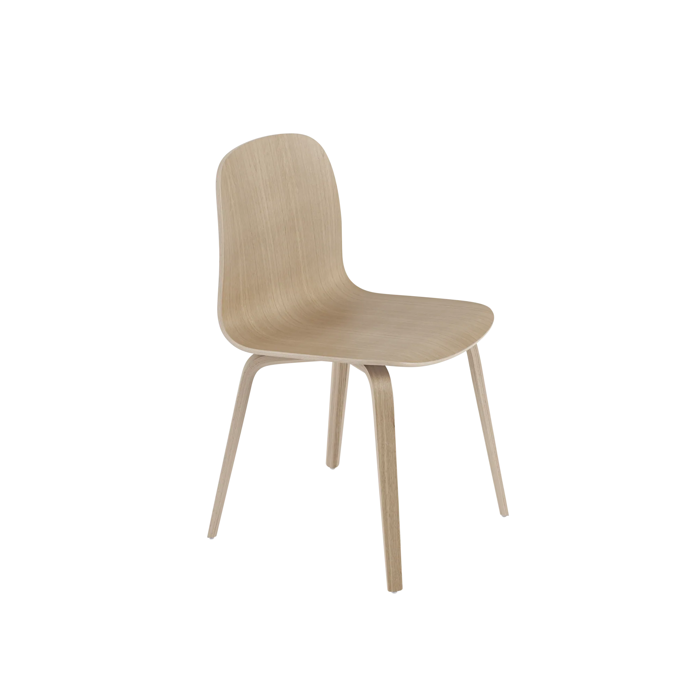
图：Visu 椅橡木款，座面与靠背的圆角处理对应"平滑曲线更令人愉悦"的设计原则。图源：MUUTO 官网 Visu 椅产品页。
美学评价
Muuto 的美学不靠单一符号取胜，而是靠一致性：形体、颜色、光线与手感被同一套逻辑约束，因此不同设计师的作品能并置在同一个空间里。缺点也来自同一处——它的辨识度需要"看一组"才成立，单件产品放进别的空间里常常显得安静到没有个性。这是它的取舍：优先让产品适应环境，而不是让环境服从产品。美学判断，置信度：中。
09 Design 设计：五种原则落到材料与结构
设计哲学：熟悉但不同
品牌对设计的定义写在官方文本里：设计要让人"倾向靠近既熟悉又新的东西"，并且"邀请人、直觉上有吸引力、不压制环境"。它没有宣称任何形而上的理念，而是把判断标准写成了可检验的三条：是否在前人基础上有推进；是否在功能与耐久上过关；是否能在不同空间里成立。由此推导出的取舍很清楚——在形式与材料之间，它选择用材料工艺换取形式的新鲜感；在手工与量产之间，它选择可复制的量产工艺（木皮折包、复合材料压制、旋压铝、玻璃吹制），因为可复制才能进入项目渠道；在个性与适应之间，它优先适应环境。
组织：内部团队与外部设计师
产品开发由内部创意团队主导，设计由外部设计师或工作室完成，报酬以版税结算，设计师名单长期稳定（Anderssen & Voll、Iskos-Berlin、Thomas Bentzen、TAF Studio、Cecilie Manz 等合作多年）。这种"内部定标准、外部出方案"的结构带来两个结果：产品线在风格上高度一致；同时设计师的行业声誉会反过来给品牌带来专业背书。品牌还用竞赛机制补充新血——2010 年起的北欧学生奖项，到 2024 年扩展成全球设计竞赛。
CMF：木皮、回收复合材与手工旋压铝
材料体系的骨架是三类工艺。其一是木材与木皮：Cover 系列把整片木皮折过椅腿折包成型，官方称这种叠层方式同时把椅子各部"锁"在一起，代价是成形良率与工匠经验——设计师本人说过，最终形态只有靠生产端的手艺才能实现。其二是复合材料：Fiber 椅的外壳用回收塑料与 FSC 木纤维混压，哑光表面来自木纤维在表面层的分布，难点在回收料来源的稳定性与配比标定。其三是金属与玻璃：Ambit 的灯罩为手工旋压铝，Kink 与二十周年的玻璃器物为手工吹制，前者追求均匀出光，后者接受每件的色差与亮度差异作为特征。
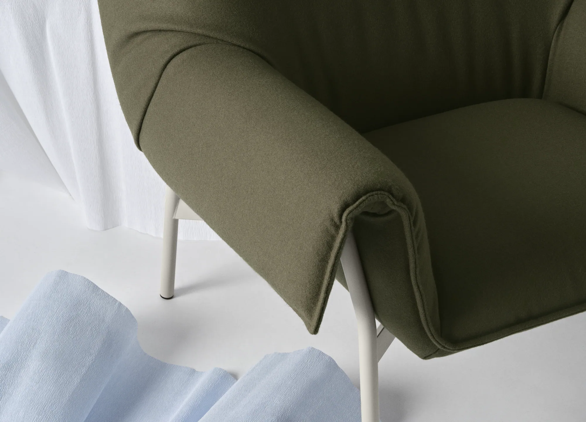
图：Wrap 休闲椅概念场景，围合座体与面料之间的结构关系。图源：MUUTO 官网 Wrap 休闲椅产品页。

图：Compile 收纳系统的完整配置，立柱与层板按模数组合，体现"可复制工艺"的产品逻辑。图源：MUUTO 官网 Compile 系列页。
制造与合规：把指标做成数字
Muuto 不自建工厂，靠欧洲供应链代工，因此它的设计必须迁就供应商的工艺窗口；这也解释了它为什么偏好可复制的成形方式。它选择把合规做成公开数据来建立信任：已评估 99% 产品的 CO₂e 排放（涵盖范围 1、2、3）；77% 的家具按 ANSI/BIFMA 标准测试、99.7% 满足欧标；自 2022 年起新设计中使用的木材 100% 为 FSC 认证；纺织、室内家具、配件与灯具不再有意添加 PFAS；87% 的家具系列通过低挥发（VOC）测试；超过一半的家具销售额来自持有一类生态标签（如 EU Ecolabel）的产品；备件超过 1,600 件。这些数字里最值得注意的是最后一类——它把可持续从材料话题推进到了"可维修"与"可长期使用"。
人机与工程：磁吸、排水与座高
工程细节上有三个典型处理。一是磁吸与可调：Post 灯的灯体与线缆卡扣都用磁吸，目的是让"位置"成为可调参数；二是排水与户外：Linear Steel 长凳在座板留缝、边缘折起，避免积水，户外系列按防腐与耐候选材；三是人体尺度：Cover 椅的靠背曲线、In Situ 的座深与裙边高度、Visu 的座面倾角，都在家用舒适与项目强度之间取平衡。Muuto 在工程上的策略不是堆参数，而是把少数几个动作（高度、角度、连接方式）做成可调的。
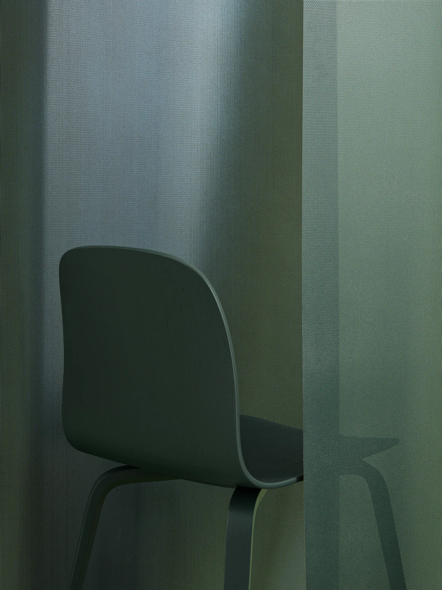
图：Visu 椅概念图，可看到靠背与座面的角度关系与圆角处理。图源：MUUTO 官网 Visu 椅产品页。
品牌主张与产品落点
| 品牌主张（从官方信息提炼） | 产品落点 |
|---|---|
| 熟悉但不同：在既有原型上前进一步 | Fiber 椅重写壳体椅；Nerd 椅重写木椅；Cover 椅重写木皮工艺 |
| 用材料工艺换形式新鲜感 | 回收塑料+木纤维复合外壳；纤维喷涂灯罩；木皮折包；手工旋压铝 |
| 光塑造空间状态 | Ambit 内白出光；Under The Bell 钟形反射；Post 可调角度与调光 |
| 让用户掌握一部分决定权 | Post 灯体位置与亮度可调；In Situ 模块可重排；Compile 层板可增减 |
| 经久使用优先 | BIFMA 耐久测试；1,600+ 备件；可拆换面料；一类生态标签 |
| 适应环境而非主导环境 | 低饱和配色体系；无可见螺钉；细腿与离地座体 |
10 Experience 体验：从展厅到十年使用
体验观：让空间"感觉对"
Muuto 对体验的理解写在官方文本里：家是"真实而可触的经验的场所"，颜色唤起记忆、材料触发感受、形体作用于潜意识；品牌把目标说成"让一个空间感觉刚好合适（feel just right）"。这句话在操作层面意味着两件事：体验的对象是空间而不是单件产品；体验的检验标准是感受而不是参数。它也解释了品牌为什么把研究精力放在神经美学上——如果目标是"感觉对"，就需要一套比"好看"更具体的判断依据。
机制：体验落在哪些触点
体验被拆成几个可执行的触点。视觉层：低饱和配色与统一光位，让不同系列能并置；触感层：木皮的折边、复合外壳的哑光、羊毛与皮革的织物结构，都鼓励直接触摸；光层：可调角度与调光、内白灯罩、钟形反射，让同一盏灯在一天里改变空间状态；空间层：Muuto Space 与旗舰店按"居家场景"布置而不是按 SKU 陈列，参观者看到的是组合而不是单品；服务层：上海等地的 Muuto Space 采用预约制，把到店变成一次有讲解的会面，而不是自助选购。
兑现与断裂：承诺与现实的距离
兑现得比较好的部分是材料与耐用：测试标准、备件数量与生态标签都可查，家具的面料与皮革也提供原厂清洁保养指引。断裂点主要有三处。第一是交付节奏：品牌以欧洲供应链生产、按项目排产，热门面料与定制版本的交期通常以周计，与本地现货渠道相比没有优势。第二是可维修的实际体验：备件目录公开，但更换服务依赖各地经销商的能力，跨地区购买时这一层会变薄。第三是"体验观"与零售现实的落差：品牌想让人"进入一个感觉对的空间"，但多数市场里消费者第一次接触它仍然是在别人的餐厅、酒店或办公室，而不是自家的陈列空间。体验判断，置信度：中。
11 Competition 竞品：同价位带上的北欧设计
品牌归属与行业坐标
Muuto 现属美国 MillerKnoll 集团。这个归属有两层含义：一是它获得了集团级别的采购、物流与项目渠道支持；二是它的姊妹品牌里直接包含 HAY——同样是北欧设计家具、同样面向设计零售与项目市场。也就是说，Muuto 与最直接的竞争者之一同属一个母公司，集团在内部做品牌分层（HAY 更偏大众与快节奏上新，Muuto 更偏材料与耐久叙事），对外则共享部分渠道资源。行业坐标判断，置信度：高。
品牌层：三类对手
第一类是北欧设计同侪：HAY、&Tradition、Normann Copenhagen、ferm LIVING、Audo Copenhagen（原 MENU）、Gubi。它们的定位相近、价格带重叠、渠道几乎完全重合，差别在语言：&Tradition 与 Gubi 更强调经典设计师档案的重推，Normann 与 ferm 更偏色彩与生活趣味，Audo 更偏整体空间方案；Muuto 的差异化落在材料工艺与合规指标上。第二类是高端功能主义的欧洲品牌：Vitra、USM、Flos、Kartell 等，价格更高、建筑属性更强，争夺的是同一批设计师的方案预算。第三类是快速跟进的区域品牌：以更低价格复制同类形体与配色，主要影响入门产品的比价。
产品层：四类直接对位
椅与凳：Fiber、Cover、Visu、Nerd 对位 HAY 的 About A Chair 系列、&Tradition 的 In Between 与 Rely、Normann 的 Form 系列，竞争点在壳体的材料叙事与堆叠、强度等实用属性。
沙发与模块系统：Outline、In Situ、Connect 对位 HAY 的 Mags、&Tradition 的 Cloud 与 Develius，竞争点除面料与舒适度外，还有模块的重排自由度与项目交付能力。
灯具：Ambit、Strand、Under The Bell、Leaf、Unfold 对位 &Tradition 的 Flowerpot 与 P376、Normann 的 Amp、Gubi 的 Multi-Lite、Flos 的高端系列；Muuto 的差异在材料工艺（纤维喷涂、手工旋压铝）与"改变空间状态"的定位。
配件与小件：The Dots、Kink、Restore 系列对位 HAY 与 Normann 的配件线，这一层最容易被比价，品牌靠材质组合（木、金属、陶瓷）与系统化排布维持溢价。
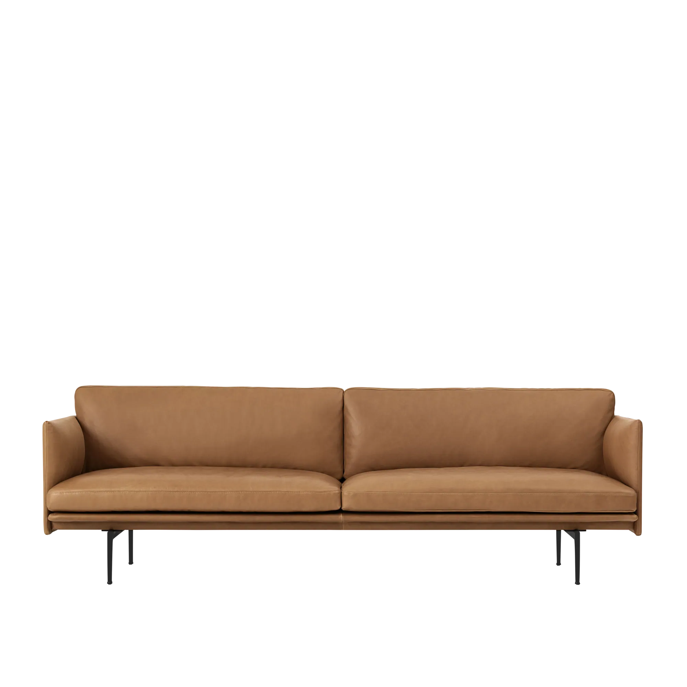
图：Outline 三人沙发（皮革款），同一形体通过面料与皮革区分价位与场景。图源：MUUTO 官网 Outline Sofa 产品页。
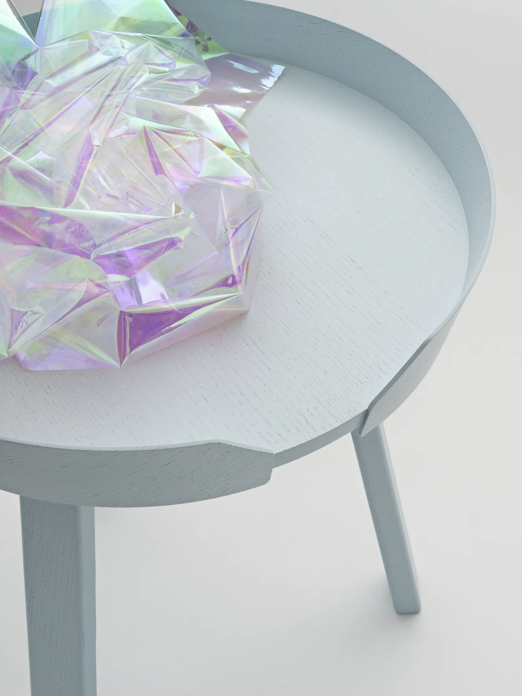
图：Around 咖啡桌（浅蓝），桌腿与桌面的一体处理是品牌在桌类产品上的典型做法。图源：MUUTO 官网可持续发展页。
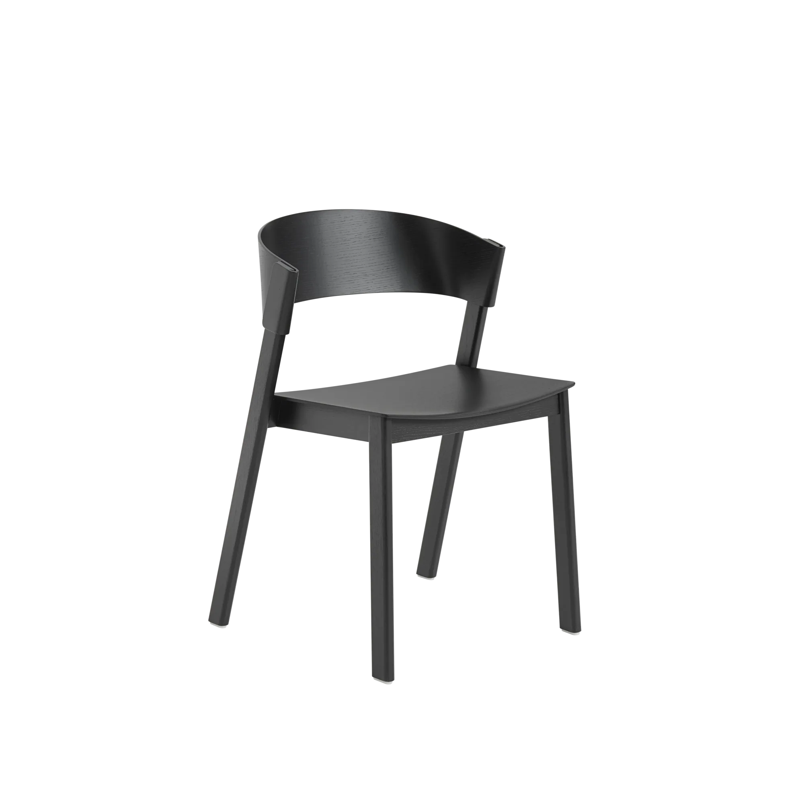
图：Cover Side Chair（黑色），可堆叠、无软包版本持有 EU Ecolabel 认证。图源：MUUTO 官网 Cover Armchair 产品页。
中国市场的对照
品牌在中国没有大量铺开零售网点，已知的自营触点是与全球同步的 Muuto Space Shanghai（预约制），产品主要通过设计家具零售商、项目代理与跨境电商进入；官方站点没有中文版本，也没有公开的本地价格表。它的机会在于高端住宅、酒店与办公项目对北欧设计与合规材料的认可，以及中国设计师群体对 FSC、无 PFAS 这类指标的接受度；挑战在于交期与售后由进口链条决定，而本土与代理渠道的设计家具品牌在价格与响应速度上更有优势。中国市场判断，置信度：中。
竞争小结
Muuto 的护城河不在单件产品，而在三处：一是把北欧设计的语言、材料工艺与合规指标绑成一条完整叙事，让"好看"变成可核查的采购理由；二是与固定设计师群体的长期合作，保证产品线在审美上不掉队；三是集团渠道带来的项目可见度。它最脆弱的地方是产品形体的可复制性——一旦同价位品牌在材料与认证上追平，竞争会回到价格与交期。
12 Strategy 战略：产品与品牌层面的判断
技术路线与产品规划
Muuto 的技术路线可以概括为"可复制的材料工艺 + 可配置的系统"。第一条主线是材料替代与工艺升级：木皮折包、回收塑料与木纤维复合、纤维喷涂灯罩、手工旋压铝与手工吹制玻璃，全部要求能在欧洲供应链上稳定复现。第二条主线是系统化：收纳（Stacked、Compile、Linear System）、沙发（Connect、In Situ、Outline）、桌（Midst、Workshop）与灯具都在做"可增减的配置"，而不是单件型号，这与项目渠道的采购方式直接对接。第三条是合规前置：FSC、无 PFAS、BIFMA、生态标签被写进产品定义阶段，而不是事后补证。
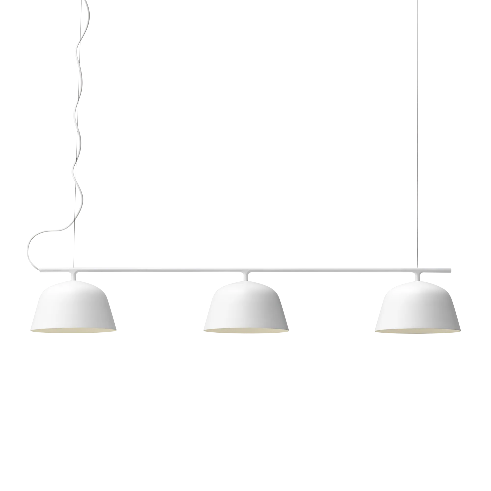
图：Ambit 灯具白色款，手工旋压铝灯罩与内白涂层是品牌在金属工艺上的代表处理。图源：MUUTO 官网 Ambit Rail Lamp 产品页。
定位与品类路线的演进
品牌定位经历三次位移：2006 至 2013 年是"新北欧"的生活方式品牌，靠灯具与配件进入市场；2014 至 2018 年在资本注入与集团并购后转向更宽的品类与项目市场，开始做模块沙发与系统收纳；2019 年以后把"神经美学"与"可持续指标"作为叙事核心，把产品从"好看的家居"推进到"有依据的空间设计"。每一次位移都伴随品类扩张：从配件到灯、从灯到椅、从椅到沙发与整间系统。
设计语言与材料体系的演进
设计语言的骨架没有大改——圆角、细腿、无可见螺钉、低饱和配色——变化发生在材料层：木从实木扩展到木皮折包与染色木材；塑料从原生扩展到回收复合；金属从通用件扩展到手工旋压与粉末喷涂；陶瓷与玻璃进入配件与限量作品。这条路径把"北欧"从材料印象（浅色木）改写成工艺清单，好处是设计师可以核对，代价是叙事门槛提高——它的卖点需要解释，而不像颜色那样一眼可见。
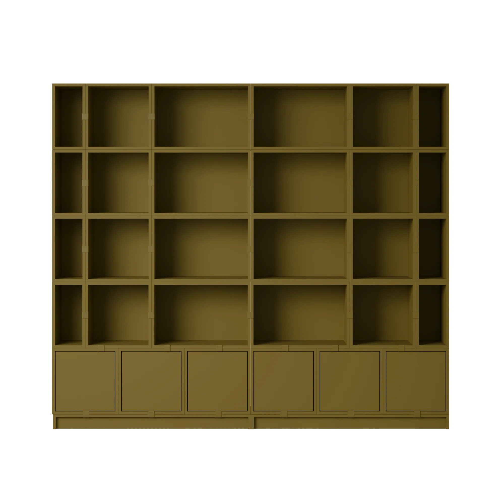
图：Stacked 收纳系统的书柜配置，模块按需叠加，是品牌最早的系统化产品线之一。图源：MUUTO 官网 Stacked 收纳系统产品页。
品牌影响力与行业坐标
影响力可以从四条线看。奖项与机制：早期靠北欧学生设计奖项发掘新人，2012 年获奖的 Nerd Chair 进入量产，2024 年升级为面向全球的设计竞赛，评审引入设计与科技行业的跨界人物。媒体：设计媒体对其材料与工艺更新持续报道，2022 年的回收塑料版本是报道最集中的一次。渠道：欧洲、北美与亚洲布局十几处 Muuto Space 与旗舰店，其中巴黎、东京、首尔、台北为核心，上海以预约制运行。文化与项目：二十周年（2026）把周年做成跨城市的限量发行与对谈，品牌把"下一章北欧设计"作为公共话题来经营，这一动作把营销预算换成了行业话题度。
关键取舍与风险
三个关键取舍：一是用"适应环境"换辨识度，代价是单件产品的存在感弱；二是用可复制的工艺换手工感，代价是高端用户对"手作价值"的期待部分落空；三是用集团渠道换独立性，代价是品牌在集团内部要与 HAY 等姊妹品牌区分定位，容易出现产品与价格的重叠。
四条可验证风险：材料成本（回收料来源单一、FSC 木材与欧洲制造的价格波动直接影响毛利）；交期与产能（依赖欧洲供应链，跨洲交付在项目招标中容易被本地现货品牌挤掉）；可复制性（形体与配色门槛不高，材料与合规一旦被追平，竞争回到价格）；叙事依赖（神经美学与合规指标需要持续投入研究、测试与传播，一旦停止更新，品牌的差异化理由会迅速变薄）。另有两条信息层面的弱点：集团不单独披露 Muuto 的经营数据，外部难以评估其真实增长；中文市场缺少本地化内容与价格体系，削弱了在中文项目中的说服力。战略结论，置信度：中。
13 视频与访谈资料
本次检索未取得可直接引用的官方影片页面或完整访谈视频条目：品牌的内容主要以官网故事页、可持续页、神经美学长文与设计媒体的采访报道形式存在，官方社交渠道为 Instagram（@muutodesign）、Pinterest（pinterest.com/muuto）、Facebook 与 LinkedIn。以下是可追溯到原文的访谈与报道线索：
- Fiber Chair 回收塑料版本：品牌对材料转向的完整表述见 Dezeen 报道（2022 年 2 月）；
- Strand 灯具：设计师 Benjamin Hubert 对合作与产品的表述见 Dezeen 报道（2019 年 9 月）；
- In Situ 模块沙发：Anderssen & Voll 的设计说明见 Dezeen 报道（2020 年 4 月）；
- 设计竞赛：首席营销官 Line Brockmann Juhl 的表述与评审名单见 Dezeen 报道（2024 年 6 月）。
视频类的资料缺口在此如实标注，未以图片或转述替代。
14 来源与延伸阅读
官方资料
- MUUTO 官网：https://muuto.com
- 品牌故事（Our Story）：https://muuto.com/content/about/our-story-a-space-that-just-feels-right/
- 可持续发展页（含各项公开指标）：https://muuto.com/our-sustainable-perspectives/
- 神经美学专题（五项原则与合作研究）：https://muuto.com/neuroaesthetics/
- 二十周年活动与限量发行：https://muuto.com/20-years-activations/
- 设计竞赛：https://muuto.com/about-design-contest/
- 媒体与新闻联络页：https://muuto.com/content/contact2/press/
- 产品与系列页（示例）：Fiber Armchair Swivel Base、Cover Armchair、Strand Pendant Lamp、Post Floor Lamp、Kink Vase、In Situ Modular Sofa、Nerd Chair、Stacked Storage System
集团与母公司档案
- MillerKnoll 2026 财年 Form 10-K（美国证券交易委员会）：https://www.sec.gov/Archives/edgar/data/66382/000006638226000092/mlkn-20260530.htm
- MillerKnoll 公司页：https://www.millerknoll.com
设计媒体与报道
- Dezeen｜Muuto 以回收塑料重启 Fiber Chair（2022-02-23）：https://www.dezeen.com/2022/02/23/mutto-relaunches-fiber-chair-recycled-plastic/
- Dezeen｜Earnest Studio 的 Post 灯与 Kink 花瓶（2020-02-01）：https://www.dezeen.com/2020/02/01/muuto-earnest-studio-post-lamp-kink-vase-design/
- Dezeen｜In Situ 模块沙发（2020-04-28）：https://www.dezeen.com/2020/04/28/in-situ-modular-sofa-anderssen-voll-muuto-launches-vdf-products-fair/
- Dezeen｜Cover Side Chair 与 Thomas Bentzen 的工艺表述（2020-03-05）：https://www.dezeen.com/2020/03/05/muuto-cover-side-chair-thomas-bentzen/
- Dezeen｜Layer 的 Strand 吊灯（2019-09-03）：https://www.dezeen.com/2019/09/03/layer-benjamin-hubert-pendant-lamps-muuto/
- Dezeen｜Muuto 设计竞赛与评审（2024-06-12）：https://www.dezeen.com/2024/06/12/muuto-design-competition-new-perspectives/
- Dezeen｜Muuto 标签页（历年报道汇总）：https://www.dezeen.com/tag/muuto/
百科与档案
- Wikipedia｜Muuto（含 2006 年创立、2014 年股权变更、2017 年 Knoll 收购等信息）：https://en.wikipedia.org/wiki/Muuto
- Wikipedia｜MillerKnoll（子公司清单含 Muuto 与 HAY）：https://en.wikipedia.org/wiki/MillerKnoll
- Internet Archive CDX（用于核对早期产品页是否存在）：https://web.archive.org/cdx/search/cdx?url=muuto.com&matchType=domain&filter=original:.stacked.
官方社交渠道
- Instagram：https://www.instagram.com/muutodesign/
- Pinterest：https://pinterest.com/muuto/
- LinkedIn：https://www.linkedin.com/company/muuto/
15 分析附录
产品组合矩阵
| 类别 | 代表系列 | 主要设计师 | 角色与说明 |
|---|---|---|---|
| 椅与凳 | Fiber、Cover、Visu、Nerd、Workshop | Iskos-Berlin、Thomas Bentzen、Mika Tolvanen、David Geckeler、Cecilie Manz | 覆盖家用与合同场景，可堆叠、可多底座，是品牌的走量基础 |
| 沙发与模块系统 | Outline、In Situ、Connect、Oslo、Settle、Wrap | Anderssen & Voll、Normal Studio | 高价段与项目入口，强调配置自由度与座深 |
| 桌几 | Midst、Couple、Around、Soft Table、Workshop Table、Earnest | TAF Studio、Sylvain Willenz、John Tree、Cecilie Manz | 与沙发、椅子成套销售，材料从实木到大理石 |
| 收纳系统 | Stacked、Compile、Linear System | Julien De Smedt、Cecilie Manz、Thomas Bentzen | 系统化产品，按模数增减，项目与办公场景的主力 |
| 灯具 | Ambit、Strand、Under The Bell、Unfold、Post、Leaf、Set、Calm | TAF Studio、Benjamin Hubert、Iskos-Berlin、Form Us With Love、Earnest Studio、Jamie Wolfond、Aleksej Iskos | 品牌最早建立辨识度的品类，材料工艺差异最集中 |
| 配件 | The Dots、Kink、Restore、Ridge、Pebble、Mingle | Lars Tornøe、Earnest Studio、Mika Tolvanen、Kaksikko、Margrethe Odgaard | 入门价格带与礼品场景，靠材质组合与系统排布维持溢价 |
| 户外 | Linear Steel、Settle、Outdoor Cover | Thomas Bentzen | 按防腐与排水设计，对接景观与泳池配套 |
CMF 与工艺速查
| 材料／工艺 | 做法 | 代表产品 | 备注 |
|---|---|---|---|
| 木皮折包 | 整片木皮折过椅腿折包成型，同时锁合部件 | Cover 系列 | 无可见螺钉；无软包版本持 EU Ecolabel |
| 回收复合外壳 | 回收塑料（80% 来自眼镜制造废料）＋FSC 木纤维混压 | Fiber Chair | 官方称该款碳足迹下降约 30% |
| 纤维喷涂 | 纤维聚合物喷附轻钢骨架，硬化后充当扩散罩 | Strand | 体量大、材料薄 |
| 手工旋压铝 | 铝板旋压成罩，内壁白色涂层 | Ambit 系列 | 出光均匀，系列含挂灯、落地与吊灯 |
| 陶瓷与手工玻璃 | 缎面釉陶瓷；穆拉诺手工吹制玻璃 | Kink 花瓶；二十周年限量器物 | 玻璃件接受色差与亮度差异 |
| 面料与皮革 | 固定面料体系＋原厂皮革，提供清洁保养指引 | Outline、Oslo、Wrap 等 | 沙发与椅子共用面料库 |
竞品对照
| 品牌 | 归属 | 定位差异 | 直接对位产品 |
|---|---|---|---|
| HAY | MillerKnoll（同集团） | 北欧设计＋更快的新品节奏与更宽的价格带 | About A Chair、Mags 沙发、配件线 |
| &Tradition | 独立（丹麦） | 经典档案重推＋当代合作 | In Between、Rely、Flowerpot、P376 |
| Normann Copenhagen | 独立（丹麦） | 色彩与生活趣味，设计语言更外向 | Form 系列、Amp 灯具 |
| ferm LIVING | 独立（丹麦） | 生活方式延展，软装与配件比重高 | 配件与软装线 |
| Audo Copenhagen | 独立（丹麦） | 整体空间方案与酒店项目 | 收纳、桌与软装系统 |
| Gubi | 独立（丹麦） | 设计史档案与奢侈品化定位 | Multi-Lite、Beetle 等 |
| Vitra／USM／Flos | 独立（瑞士／意大利） | 高端功能主义与建筑属性 | 办公系统、灯具与椅类高端段 |
定位图（表格化）
| 维度 | 品牌取值 |
|---|---|
| 价格带 | 中高端设计家具：配件数十至数百欧元，椅子与桌数百至两千欧元，沙发与系统按配置计价 |
| 设计来源 | 外部设计师＋版税制，内部团队定标准 |
| 材料主张 | FSC 木材、回收塑料复合、无 PFAS、可维修备件 |
| 场景定位 | 住宅 + 合同项目双轨（办公、酒店、餐饮、教育） |
| 语言风格 | 低饱和、圆角与折线并用、无可见螺钉、适应环境 |
| 体验主张 | 让空间"感觉刚好合适"，以神经美学五原则为方法 |
证据登记
| 结论 | 证据 | 来源 | 来源类型 | 置信度 |
|---|---|---|---|---|
| 品牌创立于 2006 年，创始人为 Byrge 与 Bonnen | 维基百科条目与官方品牌故事 | Wikipedia／muuto.com | 第三方百科＋官方 | 高 |
| 2017 年宣布被 Knoll 以 3 亿美元收购，2018 年 1 月起生效 | 维基百科引丹麦 RetailNews 报道 | Wikipedia（引 RetailNews） | 第三方媒体 | 高 |
| 现属 MillerKnoll，与 HAY 同集团 | MillerKnoll 子公司清单；SEC 10-K | Wikipedia（引 SEC 10-K） | 集团档案 | 高 |
| Fiber Chair 2014 年发布，2022 年改用回收塑料 | Dezeen 报道明确写"originally launched the chair in 2014" | dezeen.com | 第三方媒体 | 高 |
| Fiber 外壳塑料 80% 来自眼镜制造废料 | Dezeen 报道与官方可持续页 | dezeen.com／muuto.com | 媒体＋官方 | 高 |
| 99% 产品已评估 CO₂e、77% 家具通过 BIFMA、1,600+ 备件等指标 | 官方可持续页 | muuto.com | 官方 | 高 |
| Strand 2019 年伦敦设计节发布，是首位英国设计师合作 | Dezeen 报道与维基百科 | dezeen.com／Wikipedia | 媒体＋百科 | 高 |
| Post 灯与 Kink 花瓶为 Earnest Studio 首批作品，2020 年发布 | Dezeen 报道 | dezeen.com | 第三方媒体 | 高 |
| In Situ 模块沙发 2020 年发布，设计者为 Anderssen & Voll | Dezeen 报道 | dezeen.com | 第三方媒体 | 高 |
| Nerd Chair 出自 2012 年品牌学生竞赛首奖 | 维基百科（2012 年获奖名单） | Wikipedia | 第三方百科 | 中（量产年份未见官方条目，仅能确认 2014 年已在产品线） |
| 上海设有 Muuto Space，采用预约制 | 官方展厅页 | muuto.com | 官方 | 高 |
| 品牌未公开单列经营数据 | 集团层面未单独披露；检索未见公开财报 | muuto.com／SEC 文件 | 官方／集团档案 | 中（信息缺口） |